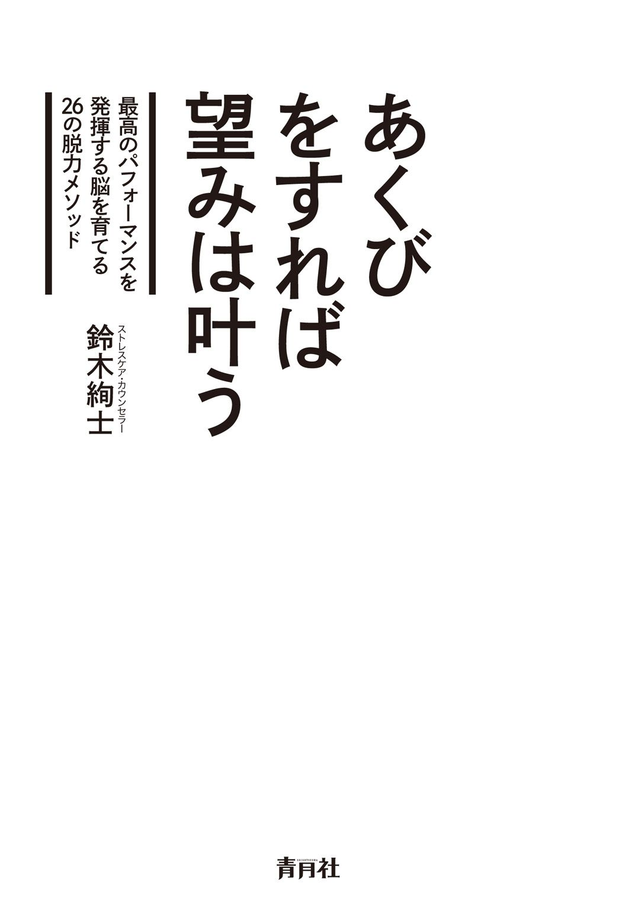
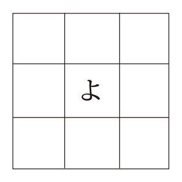

| あくびをすれば望みは叶う | |
| 鈴木絢士 | |

高い能力がありながら肝心な時に緊張してしまい、その能力を現実に活かすことができなかったという体験を多くの人が持っているのではないでしょうか。
そうした人のなかには、同様の体験が重なることで自信を失い、自己評価が低下、はては自尊心までもが下がっていく。やがて意欲が失せ、頭に靄 がかかったように感じられはじめ、仕事や日常生活面において進むべき方向が定まらなくなってしまった。このような状態に陥ってしまう人もいるでしょう。
私が脱力（リラクセーション）ということに興味を持ち、30 年以上にわたって自分なりの脱力メソッドを模索、試行してきたのも、こうした人との関わりがきっかけとなっています。
このような靄の中にある時に必要なのは、気持ちだけで事態を変えようともがくのではなく、むしろ身体を脱力させ、脳の脱力を促し、心に安定を取り戻すことです。
それは同時に、潜在する能力を現実に引き出す力を高め、最高のパフォーマンスを発揮する脳を育てることにも結びつきます。
「がんばる」のではなく「脱力」こそが肝要ということです。
世の中には、脳力を高め成功するための脳の使い方を教えるハウツー本や啓発本は数多く存在します。本書もそうした本の１冊として読まれることになるのかもしれません。
もちろんそれでよいのですが、私が本書を書くにあたってこだわったのは、ビジネスの場面や日常生活の様々な場面で実践できる「脳の脱力メソッド」を、ライブ感を持ったままお伝えすることでした。
そのためにも、単に考え方や対処法の解説と効果説明で終わるものではなく、読んだそばからすぐに試してみて、脳の脱力感を体験したいと感じていただけるものにすることに集中したつもりです。
一口に「脳の脱力メソッド」と言っても、何それ？ と思われるかもしれません。
私たちの身体はある一定の緊張状態を維持していますが、身体の緊張は心の緊張とつながっていますし、当然、脳の緊張とつながっています。
現代の社会生活では身体の緊張、心の緊張、脳の緊張が強いられ、過度になっており、なかなかゆるめることができずにいます。
脳の緊張状態を別な言い方で表すと、脳が何らかの刺激に反応し続けて、闘うか逃げるかの緊急状態にあるということです。
脳が緊急状態におかれたままで仕事や生活上の問題解決に向かわざるを得ないとすれば、おのずからその結果は明らかでしょう。問題がますます複雑化して、混迷を深めていくことにもなりかねません。
まずはそうした事態からいち早く抜け出て、戦うことも逃げることも必要のない安定した世界に立ち戻らなければなりません。そのためには、身体の脱力、心の脱力、ひいては脳の脱力が不可欠となります。
本書ではその方法論として「脳の脱力メソッド」を位置づけています。意欲が、仕事が、感性が、人生が、そして幸せが２倍になる脱力メソッドにぜひ取り組んでほしいと思います。
私が自分なりの「脳の脱力メソッド」を試行し始めたのは今からおよそ30 年以上前のことです。
当時私は、世界的にも名の通った某劇団に所属しており、劇団内外の俳優を対象に身体所作や動作をもとにしたアクティング・トレーニングプログラムを指導する役割を担っていました。所属劇団は海外の演劇祭などに招聘されて、外国公演を数多く行っていた関係もあり、米国の大学や大学院の演劇科から劇団独自のアクティング・トレーニング法を俳優である学生に指導してほしいとの要請を受けるようになっていました。
その要請に応えるために劇団は講師を送ることになったのですが、その講師の任を私が仰せつかったのが約30 年前ということになります。
英会話に堪能でもなく、単身赴任で通訳者もいない大学院の演劇科で、すでに俳優として活動している学生を指導するわけですから、不安だらけでした。
しかし、「何とかなる」という脳天気さと、それまでの海外公演の経験が若干のよりどころとなっていたのか、むしろ挑戦欲が刺激され、その任を引き受けることを決断しました。
最初の赴任先はＵＷＭ（ウィスコンシン州立大学ミルウォーキー校）でした。
渡米に先立ち、ともあれ日常英会話をある程度ものにすべく、出発までの３ケ月月間、ＮＨＫのラジオ英会話のテープで毎日特訓しました。日常会話程度なら何とか大丈夫かも、と勝手に自己判断し、次はアクティング・トレーニングで使う日本語の演劇用語と指示用語などをどう英語に訳そうかなと試行錯誤していたあたりでタイムリミット。即、ミルウォーキーへ出発という具合でした。
案の定、ＵＷＭでの２カ月の特別授業が始まってすぐの時期、授業中に出される質問や担当教授たちとの打ち合わせで出される質問の意味がまったく分からないという事態に直面しました。何度も聞き返しては見当違いの回答を繰り返すということがしばらく続いたのです。
そこで提案したのは、アクティング・トレーニングの授業中は私に質問しないこと、私がやって見せる身体所作と動作を反復すること、動作の修正と指示は私が学生の身体に直接触れて行うと同時に、担当教授と取り決めた指示用語を用いて私が学生に指示伝達すること。質問は別に時間を取り、できるだけゆっくり話してもらい、私は自分の説明、発語能力の範囲内で答える。どうしても互いに理解不能の場合はノートに書いてもらい、翌日に文章で答えるというものでした。
こうして改めて再スタートして１週間ほど経った頃、あれほど身体動作の意味や演技上の効果についてこだわり、質問を繰り返していた学生たちから、不要な質問が出なくなりました。また、学生たちの身体動作に対して私が身振りを交えて発するシンプルな感想や評価（グッドとかノーバッドとかビューティフォ等々）に学生の一人一人が身体動作や表情、発声で的確に反応するようになり、演技への集中力が急激に高まってきました。
トレーニング中は、表現したい身体イメージを獲得させるため、学生の身体に軽く触れながら腕の位置をほんの少し上げたり下げたりといった簡単な指示メッセージを伝えます。当初、信頼関係も薄く、言葉によるコミュニケーションが不十分だったわけですが、互いに直接触れ合い、表情、視線、発声などの言語外の交感をベースに互いの気持ちや表現を確認し合うという共同作業が、身体感覚、皮膚感覚、身体動作感覚への集中感を高め、深いコミュニケーションを実現していったのだと思います。
直接的な身体の触れ合いによる本能的な欲求の充足、つまり安心感がお互いの間に生じていたのでしょう。
これはまさに「脱力効果」の顕れでした。
当初、何とかなるだろうという楽観的な気分でいたものの、ほとんどが初めての体験ですから、我知らず強い緊張状態にありました。それが一時的にせよ、言葉と意味からの重圧から解放され、薄い皮膜を通してコミュニケートしていた学生の一人一人と、素で直接触れ合うことができるようになったことで、私自身が脱力し、余分な緊張の衣を脱ぎ捨てることができたのだと思います。
授業に変化が顕れはじめた頃、１ケ月後に公演を控えていた演出担当の教授から私はある相談を受けました。その相談とは、私も以前から気になっていたある学生に関することでした。彼はイメージ豊かな身体表現とパッションを感じさせる発声の持ち主で、人を引き付けるオーラのようなものを持っていました。
相談は、本番までに彼のある問題を何とか解決したいというものでした。
教授が私に説明したことは、彼は非常に才能ある俳優であるにもかかわらず、なぜか本公演となると、その才能の半分も出せないでいる。自分の才能を低く評価しているらしく、本番になると何のひらめきも感じないありきたりの演技になってしまう。どうも自信を持てないでいるし、ステージ上ではとても緊張しているようだ。今回がメインキャストにつける最後のチャンスかもしれない。この公演で才能を発揮することができれば、ブロードウエイでもオフブロードウエイでもオーディションに通る可能性が高くなるのだが。
当時の私の英語理解で受け取った相談内容とはこのようなものだったと記憶しています。
つまり、彼が自己評価を高め、本番での過度な緊張をゆるめられるようにしてほしいということだと理解しました。
以後私はトレーニングプログラムの中で、特に強い緊張と深い脱力を求められる身体動作をかなりしつこく行うようにプログラムを少し変更しました。
また、教授が何とかしてほしいといった学生には、身体を緊張状態にするトレーニングの時に、彼の背や手、肩などに軽く触れて、緊張と同時に安心感が得られるような配慮をしていきました。
やがて公演が近づき、彼が不安定な精神状態で稽古中に集中が希薄になってくると、休憩中に少し身体動作を促し、「エクセレント！」「ベリーグッド！」と思いを込めてやや大げさに言ったりもしました。
そして迎えた本番は、彼にとっても、観客にとっても、私にとっても、演出の教授にとっても満足のいくものとなりました。
この時の経験は私に「脱力＝リラクセーション」への視点を与え、現在に至る「脱力メソッド」への道を歩ませ続けています。
現在私は本格的に「脱力」を学び、深める仕事として、15 年前からＢＴＵ（バランスセラピーユニバーサル）においてバランスセラピー学（ストレスとリラクセーション技法を専門とする学問）の教育と実践活動に携わっています。
教室では、相談者の身体に直接働きかけて生理学的な脱力状態を実現するバランスセラピー技術実習を指導していますが、実習時のトレーニングのやり方は30 年前にＵＷＭで行ったトレーニングのエッセンスを継承しています。
本書で紹介する26 の脱力メソッドは、こうした私的体験をもとに、脳科学の最新知見やバランスセラピー学が開拓してきた脱力技法を私なりにかみくだき、アレンジ、試行してきた50 余りの脱力法から、すぐに試すことができ、かつ、今活用するに有効であろうと思われる脱力法をピックアップして「脱力メソッド」としてまとめたものです。
できることを、できる時に、できるところで試してみる。気軽に脱力メソッドに取り組んでほしいと願っています。
平成25 年12 月 鈴木絢士
目次
●「目標」と「あきらめ」は隣り合わせ
●脳を活性化する「小さく頻繁な達成感」
●自分で決定し、自分で動くことに快感がひそむ
●やる気が爆発する目標の立て方
●タダで元気をもらえる場所
●他人の快い会話は自分の脳にとっても快い
●モチベーションを蓄える生活習慣
●自己評価で人生が変わる
●自己評価を上げる簡単な方法
●寝る前はネガティブになりがち
●朝のモチベーションを上げる入眠法
●発想力と集中力を３分間で復活させるパズル
●鳥がもたらす想像力
●ウイルスがもたらす仮想力
●信号待ちで直観力が育つ
●アイディアは「机上」より「騎乗」で生まれる
●ランニング、ウォーキングでもひらめき力はアップする
●プレゼンは見た目が９割
●潜在能力を引き出す究極の技「大あくび」
●「今できること」が「やる気のスイッチ」
●困難な問題でも「今できること」が解決してくれる
●言霊の正体
●言葉づかいが脳の性能を左右する
●大事なのは問題から目をそらすこと
●明日は明日の風が吹く
●お気軽な思考で脳をもみほぐす
●皮膚感覚が人間の脳を進化させた
●皮膚感覚を研ぎすませてから問題と向き合おう
●探究心・好奇心を意識的に発生させる方法
●「あっ！ そうか！」が脳を強化する
●底辺には大きなエネルギーが存在する
●好きなことを嗅ぎ回って小さな快を見つける
●小さな「快」が本来の能力を引き出してくれる
●一服は休憩ではなく覚醒の時間
●深くない一服は時間の無駄
●パターン化した行動は脳を硬直させる
●大まじめな変装プレイ
●ホムンクルスの機嫌をとって客観性を手に入れる
●抑圧されたもう一人の自分
●鏡に向かってシャドウと対峙する
●我慢はコミュニケーション能力を低下させる
●あなたがタコ社長だったら......
●我慢吐き出しメソッド
●フリマネを駆使して心を整える
●脳は興味の対象に同化しようとする
●サルマネが親密度を押し上げる
●ほめてまわれば対人緊張がなくなる
●ほめることは脳にとっての万能薬
●ほめ上手になる初歩的トレーニング
私たちは子どものころから何をするにも目標にもとづいて行動しています。意識していようがいまいが、どんな活動にも「なぜそれをやるのか・何を目指すのか」という理由があるはずです。習い事、部活動、受験、就職活動、ビジネス、貯金、婚活にいたるまで、老若男女を問わず、生きている限り、そこには目標達成というゴールがあり、それに向かって行動するという活動は続きます。
私たちは目標がないところでは、行動する意欲を維持することが困難だと言い換えることもできるでしょう。
しかし、目標達成というゴールを目指していても、目指したゴールにたどり着ける人とそうでない人がいます。受験に合格する人と失敗する人、仕事で大きな成果を出す人と中途半端な成果に終わる人、堅実に貯金して家を買う人といくつになっても貯金が増えない人......。
この違いはどこから生まれるのでしょうか。
うまくいかない人は、目標をさほど意識せずに、ただ漫然と行動しているのでしょうか。実はそうではありません。むしろ彼らの多くは、はじめは人並み以上に大きな目標を設定し、それに向かって一生懸命やっていこうと強く意識していることのほうが多いのです。
「はじめに大きな目標を立てることはよいことではないの？」
そう疑問を持たれる方も多いと思います。むしろ目標は大きく設定した方が実現したときの達成感も大きく、ますますやる気や自信、意欲が増すと思っている方のほうが圧倒的に多いのではないでしょうか。
確かに大きな目標が実現できたら、達成感を感じ、気分もよく、自信も増すでしょうし、より大きな目標に挑戦しようとする意欲も高まるでしょう。
しかし、ここで一つ簡単な理屈を言えば、脳にとっては、小さな目標も大きな目標も達成感は同じ ということです。つまり、大きな目標を達成したときの達成感は、小さな目標を達成したときにも同じように味わえるのです。
最初に大きな目標を立ててしまうと、それを達成するまでの道のりが長いため、長期間にわたり達成感を味わうことができません。すると、心理的な報酬がないまま行動を強いられるストレス状態となり、息切れを起こしやすくなります。これが「妥協」「挫折」「あきらめ」を生むことになるのです。
逆に、日々達成できるような小さな目標をたくさん設定することで、頻繁に達成感を味わうことができます。同じ達成感であれば、できるだけ数多く達成感を味わうほうが脳が活性化し、行動に対する意欲が持続します。 それまで達成が難しいと思っていた目標がわりとすんなり実現するという事態が起きやすくなるのです。
また、私たちの脳は「現実」と「頭の中のイメージ」を区別することなく受けとめ認識します。当然ですが、明確でないイメージは脳にとって認識しづらい ということです。大きな目標ほどイメージが曖昧であったり、ディテールがはっきりしないことが多く、脳はその目標を受けとめることが困難になるのです。すると、実現しようという意欲も低下し、目標に向かって具体的な行動を起こすことができなくなってしまうというわけです。
あまり大きな目標を立ててしますと、「いつかそのうちに」という気分のうちにその目標は忘れ去られることにもなりかねません。
私たちは、自分で考え自分で決めて行動したときに、満足感や達成感、自己実現感を得ることができます。
誰かが考え、誰かが決めた目標に向かって行動させられている状態では、たとえ目標を達成しても、十分な満足感や達成感は得られません。
よい学校に合格しなければならない、仕事のノルマを達成しなければならない、マイホームを持たなければならない、結婚しなければならないなど、いかにももっともらしい大きく立派な目標は、得てして自分の価値観から生まれてくるのではなく、社会や企業など、誰かの価値観や期待感によって規定されたものです。
こうした、外部から半ば強制的に設定された大きな目標は、達成までの具体的な行動イメージが湧かないですし、そもそも本気で達成するんだという自主的なやる気が出ません。
ここで具体的な例を比較してみましょう。
Ａさん（営業職）は仕事で実績を上げることを目的に、今月の目標契約数を５件、売上目標を２５００万円としました。会社から示されている基本契約ノルマは３件で売り上げは１５００万円です。
このＡさんが設定した目標は実現可能かもしれませんし実現できないかもしれません。そこでＡさんは、部屋の壁に目標を貼りだし、毎日その目標を見て自分に気合を入れていました。
一方、Ｂさん（同じ営業職）は今月の目標を３つ作ることにしました。その際に注意したことは、現在の自分の生活状況や環境、そして行動力をもって実行可能なことを目標にすることでした。特に、仕事上の成果数値には直結しないけれど、目標達成の際には自分自身の気分がよくなり、生活に充実感やワクワク感が感じられ、間接的に仕事の成果にも好ましい影響が出る目標をつくるということでした。
具体的には、
目標１：いつも少し物足りないなと感じていた朝食に季節の果物（イチゴやオレンジなど）を１品加え、さわやか気分を盛り上げて１日をスタートする。
目標２：週末に関連企業に勤める友人と会い、美味しいワインと料理をいただきながら、業界の動向や隣接分野の新しい動きなどについて情報交換する。
目標３：前から気になっていた作家の新刊を購入し、帰宅通勤時や休みの日に集中して読む。
ＡさんとＢさん、目標の方向も内容もだいぶ違いますね。大きな目標、小さな目標の違いでもあります。
あなたならどちらの目標を選びますか？
ビジネスを生活の中心に位置付けている方であれば、Ａさんの目標を採用するかもしれません。快適生活を大切に考えているあなたならＢさんの目標ということになるでしょう。
ここでもう一度これらの言葉を思い出してください。
・脳にとっては、小さな目標も大きな目標も達成感は同じ
・明確でないイメージは脳にとって認識しづらい
・自分で考え自分で決めて行動したときに、満足感・達成感・自己実現感が得られる
Ａさんの目標はその達成度を数値化しており、一見具体的であるような印象を与えますが、現実的にはどうでしょう？ Ａさん自身、目標を達成するための具体的な行動イメージはこれから考えるといったところでしょう。また、達成しなかった場合の不安や焦りを感じているかもしれません。
一方、Ｂさんはどうでしょう？
すでに最初の目標を行動化し、さっそく気分のいい１日をスタートさせているかもしれませんね。Ｂさんの脳は、その達成の度合いに関係なく、自分で考え、決めたことに取り組めた時点で満足、花丸１００点をもらった満足感を感じています。
同じ目標を持つ場合でも、その目標の作り方次第でＡさんとＢさんとではだいぶ目標実現のプロセスが異なったようです。
脳が緊張から解放されて脱力し、やる気や意欲が高まりモチベーションがアップするためにも、目標は長い時間や高い能力を求められるようなものではなく、まず自分が体験したいこと、実現可能でシンプルなものを設定して、自分で意思決定し実行に移すことがとても重要となるのです。
これは、ビジネスにもプライベートにも同じように言えることです。大きな目標を目指すことはもちろん必要ですし、大事なことですが、単にスケールの大きな目標だけを目指そうとするのは間違っています。
ゴールに至るプロセスを細かく分解し、ときにはゴールに直結しないような遊びの要素も入れ、それを日々の目標とすることで、あなたの脳はおのずとやる気に満たされ、目標達成しやすい状態に保たれるのです。
成功している人のまわりには、なぜか同じように成功している人が集まるといったことはよく聞く話です。逆もまた然りで、成功と無縁な人のまわりにはネガティブ思考の人ややる気のない人が多いものです。いわゆる「類は友を呼ぶ」という現象ですね。
これはよく自己啓発の分野で言われることですが、成功者とつき合えばその思考回路や行動パターンが伝染するというものです。したがって、成功したければ成功している人と仲よくなるのが一番の近道、ということがよく言われます。
とはいえ、私はみなさんに今すぐ成功者のグループに仲間入りさせてもらいなさい、とアドバイスする気はありません。
実は、あなたの日々のモチベーションを高め、人生をより豊かにするための、もっと簡単にできる脳の活性法があるからです。
カフェや居酒屋・バーなど、どこでもいいのですが、一人で軽く食事をする、あるいは一杯お酒を呑むとしましょう。その時あなたはどうやって座る席を選びますか？
混み合う繁盛店の場合、お店のスタッフが誘導する席に座ることになるでしょうが、そんな時でも、数少ない空いている席の中から自分が座りたい席を選ぶこともできるのではないでしょうか。そこでお聞きします。席を決めるときの、あなたなりの選択基準はお持ちですか？
あなたが日々のストレスを放置したくない、常に前向きな気持ちでいたいとお思いでしたら、これからお伝えすることをぜひ参考にしてみてください。
やるべきことは、たったひとつ。機嫌よく会話している人たちの横に席をとりましょう。 これだけです。あとは、普段通りに食事をしたりお酒を呑んだりするだけで結構です。こんな簡単な選択があなたの脳を心地よく活性化してくれるのです。
あなたが座った隣の席で、２、３人の会社仲間らしい男女が楽しそうにビールやウーロンハイを手に、今日の取引先の担当者の話やエピソードについて冗談を交えながら話しています。どうやら商談が進み、仕事がうまくいったようです。そこから伝わってくる雰囲気や快活な笑いがあなたの脳に伝わり、あなたの脳もその雰囲気や笑い声に共鳴していきます。
同じ空間を共有し、声や気分が伝わるような環境においては、お互いにそうした雰囲気、情動を共鳴し合うという現象が起きます。
私たちの脳にあるミラーニューロン系（神経細胞回路）の働きは、他者への「共感」や他人の立場に立って物事を感じたり理解したりすることを可能にしています。意識しなくてもそうした働きが私たちの心や身体に変化をもたらすことが脳科学でも確認されています。
ですから、よい雰囲気で、明るく和やかな話題や笑い声を近くに感じるだけで、あなたの脳はその場に共感し、同じように明るく楽しい気分になっていくはずです。
また、私たちの脳は他人の体験したことと自分の体験したことを区別しないで、自分にとってリアルと感じられたものが自分の現実の体験であると認識する という不思議な働きがあります。
カフェで聞いた朗らかな話や他人の成功体験は、そこに居あわせたあなたの脳にとっては自分が体験したものと錯覚してしまうのかもしれませんね。
その錯覚体験が快いものであればあるほど、脳はますますその錯覚を現実であるかのように認識を強め、気分を変調させます。お店に入った時は特に幸せでもなく、むしろお疲れだったくらいだったのが、いつの間にか幸福感に浸り、お酒の効果以上に心地よい脱力感に心も身体も委ねることができているというわけです。
もちろん、ただ気分がよくなって終わりではありません。こうした行動を習慣化することによって、脳の快状態がコンスタントに維持されるようになります。すると、長時間ストレスにさらされる機会も減り、仕事や生活に対する意欲がウソのように向上していきます。
私たちは日々、周りの環境や雰囲気（空気感）の影響を受けながら生きています。和やかな雰囲気、楽しい会話、成功体験の話などに接する時間が多くなると、脳は無意識的にそうした雰囲気に同化、共鳴しようとするのです。これがいわゆる「思考回路が伝染する」「行動パターンが伝染する」という現象の正体です。
とても単純な理屈なので、どんなシチュエーションでもすぐに活用できるテクニックです。
たとえば、毎日の通勤電車の中でも簡単にできるでしょう。できるだけ和やかな雰囲気、楽しい雰囲気で会話している人の近くに座る。こうした小さな行動の積み重ねが、あなたの脳を常にポジティブな状態にし、日々のモチベーションや行動力を向上させるのです。
私たちは自分がした行動や発言を常に振り返りながら生活しています。また、自分に対しての周りの反応や自分が得た成果なども、その都度振り返って気にしているはずです。こうした振り返りをして、常に自己評価をしながら生きていると言ってもよいでしょう。
「さっきはなぜあんなことを言ってしまったんだろう......」
「あ～あ、今日も仕事で結果が出なかったなぁ......」
「○○ちゃんの前でどもってしまった。恥ずかしい......」
とくに一日の終わりが近づき帰路につくときや、自宅に戻って一息ついたときなど、ふと思い浮かぶこれらの思いはその日によっても様々、人によっても様々でしょう。
「今日は完璧なプレゼンができた！」とか「取引先の○○部長に褒められちゃた、やればできるってことだな！」とか「○○ちゃんに明日の食事に誘われちゃった！」など、振り返りによって自分への自信やものごとの達成感を改めて感じることもあるでしょう。
もちろん、いつもこのようなよい出来事に恵まれ続けていれば、人生を楽しんで日々前向きに生きることができます。
でも実際はそうではありませんね。
だいたいは成果や達成感が今いちはっきりしないまま一日が終わり、そのまま翌日へというパターンなのではないでしょうか。むしろ、人生には上手くいかないこと、辛いこと、面倒なことのほうが多いはずです。
今日やってしまった小さな失敗、言わなければよかった余計なひと言、誰かに言われた辛辣な言葉など、思い返すだけでモチベーションが下がってしまうことは多いものです。そういったネガティブな振り返りは、当たり前ですが自己評価を下げます。
実は自己評価というのは、人間の行動を大きく左右します。
「わたしってほんとにダメだなあ」と自己評価している人は、普段から自分に自信が持てず、何をやっても中途半端な結果しか得られません。「オレは人前でしゃべるのが苦手だ」と自己評価している人は、それを言い訳にして成長が止まってしまい、人前でしゃべる技術は向上しません。
このように、ネガティブな自己評価が習慣化して定着してしまうと、自己評価どおりの人生になってしまいます。ネガティブな自己評価が自分の行動を制限する足かせとなってしまうのです。
明日からまた前向きに生きるため、ひいては、よりよい人生を送るためには、自己評価を下げたまま一日を終わらせるのではなく、何としてでも自己評価を上げて一日を締めくくる必要があります。
習慣を制するものは人生を制するとも言います。自己評価を上げて一日を締めることを習慣にすると、上昇気流に乗った凧のように人生の運気も上がっていくはずです。
自己評価を上げるための極めて簡単な方法をご紹介します。
まず、一日の終わりにはお風呂で湯船に浸かりましょう。これが自己評価を上げる習慣の第一歩です。
熱すぎない湯船に身体を沈め、ゆっくり気持ちよく身体を伸ばし、四肢をゆるめていきます。ここで重要なのは身体の脱力です。頭を浴槽の縁にゆだね、軽く目を閉じ、お湯の中の腕や脚や背中や腰などから力を抜き、お湯のなかで身体がゆらゆらするような感じを味わいます。
だいたい４、５分ぐらい経過する頃、脱力した感覚を味わいながら、今日あったこと、体験したこと、仕事や勉強の進捗、結果などについて、考えるというより、どんな具合だったかなというぐらいの感じで振り返ってみます。
どうでしょう、風呂に入る前にはなんとなく嫌な感じのイメージや落ち込むような評価しか持てなかった事が、「うん、いい結果とまでは言えないけど、あそこのポイントは課長もなかなかいい視点で見ていると言ってくれたな」とか「いつもゴリゴリ仕事を押しつけてくる山田さんが『今日の昼、一緒にどう？』と誘ってくれて『いつもアリガトネ』なんて言ってたし」など、自己評価が下がるような不快なことよりも、むしろ自己評価が少し上がるようなことを想起・連想する方向に変化します。
脳はいつも身体と連絡を取り合っていて、身体が緊張したりアンバランスになっていると、脳も緊張し、アンバランスになります。すると心も後ろ向きになります。
これは大脳の深いところ、感情の脳と言われる領域にある扁 桃 体 という、快感・不快感や恐怖感情などに大きく関わっている部分が身体から伝わる緊張信号によって興奮して起きる反応とも言えます。
ですから、身体が脱力してゆるむことで、扁桃体の緊張・興奮も低下し、心も快状態でゆるんだようになるようです。
お風呂がこうした状態に至る環境を準備してくれます。
自分の自己評価を上げるために「何でもプラス思考で！」というのは少し無理があるかもしれませんが、お風呂に浸かる時間を利用して無理なく自己評価を上げるのは、自然で習慣化しやすい方法なのです。
自己評価が上がるということは、自分に対する肯定的（受容的）評価ができるということです。ダメな部分だけに意識が向かうのではなく、評価できる部分に意識が向きやすくなり、その前向きな評価が、明日からの好ましい展望につながっていくというわけですね。
バスタイム、とくに湯船につかって身体を緩める時間は10 分ぐらいはとりたいものです。身体の疲れをとりながら、明日へのモチベーションを得られる一石二鳥の貴重な10 分。この１日10 分が人生ウン十年に影響をもたらすとしたら、なかなか無視できないと思いませんか？
寝る前の15 分、あなたはどんなルーティンを行っていますか？
心身ともに健康で前向きに人生を楽しんでいる人の多くは、寝る前の習慣として、いつも決まったことをしているそうです。
読みかけの本を開く。目覚ましをセットし、身体が睡眠モードに入るのを待つ。ストレッチで身体を少し動かす。フェイスブックやツイッター、ラインなどでおやすみのメッセージを送ったり、気になる人の動向をチェックをする。明日の仕事を頭の中でシミュレーションする。お気に入りの音楽を聴く......など。
いずれにせよ、彼らは自分の気持ちや身体がくつろぐための行動を無意識に選び、身心が睡眠モードに入るようにそれらを行っています。ルーティンに飽きたら別なものにとって代えることもしています。
気分よく入眠することができれば、良質な休息が得られ、翌日の朝はスッキリ気分がリフレッシュされて、一日のスタートにふさわしく気持ちが前向きになっているでしょう。
しかし、実際はいかがでしょう？ イヤな出来事があったときなどは、寝る前にその出来事を思い出してしまい、怒りや後悔など、ネガティブな感情に浸ってしまいがちです。
また、翌日に重要なプレゼンを控えているなど、プレッシャーのかかる仕事をしているときなどは、頭のなかでよからぬシミュレーションをしてしまい、不安で寝つきが悪くなってしまうなんてこともあるでしょう。
そんな翌朝は、何かに急き立てられているような夢で目覚め、気持ちが重く、今日が休みだったらなぁなんて思ったりしませんか？ ぐっすり寝た感じがせず、身体もだるい。でも起きて出勤の準備をしなきゃ......など、今ひとつすっきりしない疲労感がある。こんな朝を迎えている人は案外多いのではないでしょうか。
そこでぐっすり安らかな睡眠を実現し、やる気がみなぎる快適な朝を迎えるためのスキルとして紹介したいのが「快感トピック再体験法」です。
これもやり方は極めて簡単です。
その日の「快感トピック」を思い出し、再度ゆっくり味わい直すというものです。
「快感トピック」とは、今日、自分が楽しめたこと、快く感じたこと、うれしかった出来事のことです。これを寝る前の15 分間で何か一つ思い出してください。どんなにイヤな思いをした一日だったとしても、何か一つでよいので快感トピックを思い出してみましょう。
「昼に食べたステーキ丼、本当においしかったな」
「ネットでお得なイベント情報があったな。来週行ってみよう！」
「フェイスブックで〝いいね！〟を、たくさんもらっちゃった」......等々。
どんなことでもよいです。自分にとってよかったこと、楽しいと感じたこと、気分が楽になったことなどを思い出し、ゆっくり味わいます。
たとえば、好意を感じている人からメールが来たとします。そのメールの内容を思い出し、その時に感じた何とも言えない肩の力が抜けたような感覚やその場の雰囲気、聞こえた音、思わずゆるんだ口元など、思い出せることを、その時の体感とともに再度頭のなかで体験するのです。
よかったことなんて一つもなかった。一つも思い出せない。という方もいるかもしれませんね。
今日一日のことでどうしても思い出せない場合は昨日のことで、昨日のことで思い出せないときは一昨日のことで、一昨日のことで思い出せない時は再一昨日のことでと、いつのことでもいいのです。自分の快感トピックを一つ思い出し、味わう。
するとどうでしょう？ 今日は何も快感トピックがなかったなと思っていたのに、「あれ？ そういえば、あれは今日の......」と、自分が忘れていた快感トピックを脳が勝手に見つけ出し、気づかせてくれます。
以前の快感トピックを思い出したことが脳の連想刺激になり、今日の快感トピックを思い出したのですが、それには理由があります。
私たちの脳は絶えず身体からいろいろな情報を受け取っているのですが、身体が緊張していると、緊張したときの体験の記憶を思い出しやすくなったり、その時の気分に晒されやすくなります。逆に、身体がゆるむとリラックスした体験の記憶や気分が再現されやすくなるのです。
つまり、過去の快感トピックを思い出すことによって、一時的に身体がゆるみ、その結果、脳が快感の連想刺激を受けることで今日の快感トピックを思い出したというわけです。
前項の「自己評価はお風呂のなかで」と同じく、ここでもまた脱力による効果を実感できるのではないでしょうか。
こうして快感トピックを思い出し、その体験を再体験するように味わうと、脳も体もさらに脱力し、より深い快睡眠に入ることができます。
良質な睡眠は翌日の良質なモチベーションをもたらしてくれます。
お風呂での自己評価と合わせて、ぜひとも習慣化してみてください。
一時期、「脳トレ」という言葉がブームになりました。脳を活性化するために、さまざまなメソッドが提唱され、それが書籍やゲームなどの商品にアレンジされました。老若男女がこぞって取り組んでいましたね。本書の編集担当のＫ氏も、「脳トレ」系のワークブックを買って、毎晩のように夫婦で脳を鍛えていたそうです。ひと月も続かなかったそうですが......。
ものごとを長続きさせて、習慣化するのはたやすいことではありません。多忙な生活の中で、わざわざ脳を鍛えるためだけに時間を捻出するのは、Ｋ氏でなくても、なかなか困難です。
そこで、いつでもどこでも短時間でできる脳の鍛え方をご紹介します。これは「イメージ脳」と「言語脳」のネットワークを活性化するメソッドです。
クロスワードパズルはご存じですね。まず、３×３マスのクロスワードパズルを準備します。
真ん中に何でもよいので、思いついた１文字を入れます。
たとえば「さ」を入れたとします。そして、縦・横・斜めで意味のある単語になるよう、周りの８マスに文字を入れていくのです。
連想、類推、意味、順逆、飛躍、言葉遊びなど、脳をフル活用してマスを埋めていきましょう。「イサキ（魚の名）」「クサヤ（魚を発酵させたもの）」「いくさ」「ささみ」などなど......。
このクロスワードパズルは出勤時の電車のなかや、仕事中に集中力が途切れた時、よい発想が思い浮かばず行き詰った時など、わずか３分程度で楽しむことができます。たった３分間、このパズルで脳を刺激してあげると、飛躍発想や発想転換が容易になります。
脳はご存じのように、左脳（比較、分析、言語の中枢）と右脳（直観、イメージ、ひらめきの中枢）に分かれています。その左脳と右脳が協力し合うことで、人間的な成長・発展・進化が期待できるとも言われています。
現に将棋の羽生名人の脳の使い方についてはよく知られているところです。
羽生名人はあるインタビューで、対局の時はどんなことを考えて、どのように先を読んでいるのかという質問に、おおよそ以下のような話をしていました。
だいたい対局時は相手の手を読み、それにどう対応するかを考えていますが、これまで頭の中に記録されファイルされたデータを検索するように、ダーッとサーチしていきます。その中に直観的にこれかなと思われたデータ（将棋の棋譜）をピックアップし、今度はその対応を実行した場合、その先がどう動いていくのか分析的に検討し、いけそうだったらその手を指し、ダメなときはまたサーチに戻り、再度シミュレーションをする。その連続だそうです。つまり、右脳と左脳の働きの特徴を絶妙のバランスで極限まで活かしているのですね。さすが羽生名人。将棋の名人である以前に、脳の活用名人であるということでしょうか。
脳にはおもしろい傾向があって、たとえば普段右効きの人が左手で歯を磨いたり、左で字を書いたりすることを２週間ほど継続すると、意志力が鍛えられ、これまで苦手としてきた学習や仕事、作業などの習得力や適応能力の向上が期待できるというのです。
そこで先ほどのクロスワードパズルです。このパズルは、右脳と左脳をバランスよく刺激するので、普段使わない脳を鍛えることができます。
では、ここで実際にパズルをやってみましょう。３×３マスの図を置き、中に「よ」の文字を入れます。さあ、周りの８マスを埋めていきましょう。時間は３分です。

どうです？ どのような言葉がマスの中に入りましたか？
たとえば左上のマスからななめ右下マスを埋める言葉として「やよい」と入れたとします。次に右上のマスから左下マスを埋める言葉としては「さより」と入れました。次は左上の「や」と左下の「り」との縦マスの間には何が入りますか？「ス」を入れて「ヤスリ」という言葉が入ってもよいですね。こんな風に連想、類推、意味、順逆、飛躍、言葉遊びを使って３×３マスパズルを遊んでみるのです。
いい線いったと思っているあなた。あるいは、まだ２文字残ってるというあなた。３分経過後のパズルの状態は、日によって、時間によっても違いますので、結果を見て一喜一憂する必要はありません。
ここでお伝えしたいのは、このパズルによる「言葉」と「イメージ」の連想ゲームは、マスを完全に埋めることが目的ではないということです。結果はどうあれ、実際にパズルに取り組むことによって、あなたの脳は元気を取り戻しているはずです。
今、あなたの気分や集中感、脳の状態はいかがですか？ なんとなく気分が軽くありませんか。連想やイメージ力が刺激されたような感じがしませんか。あるいは気持ちが前向きになっていませんか。発想の幅が広がる予感。何よりも集中力が強まった感じがしませんか。
朝のメールチェックと返信作業を終えて、次の仕事に取りかかるまでの合間、企画書や報告書の文章づくりに行き詰まってしまったとき、頭がぼーっとして集中力が途切れてしまった時など、スマホを取り出してゲームを始めるのははばかられますが、この３×３マスパズルなら頭の中でもできます。ぜひ試してみてください。
想像力を鍛えるために必要なのは、鳥になる能力であることをご存知ですか？ あるいはウイルスのごとき微小な生物になる能力であることを。
人を驚かすようなすぐれた発想には、想像力や仮想力は不可欠です。
あなたは普段どのようにして想像力を豊かにし、仮想力を高めていますか？ 特別なイメージトレーニングやロジックツリーを活用するなどと考えていませんか？ 特殊な方法やスキルを使わなくても、これから紹介する６分間の「遊び」を時々やってみるだけで、想像力、仮想力は身につきます。
まず、大空高く飛び立ちましょう。もちろんイメージの中での話です。イメージによるグーグル遊びと言ってもよいかもしれませんね。
どこに居てもいいです。たとえば自宅のソファの上やオフィスのデスクの前など。まずは今自分がいるところから、身体がふわふわと浮き上がった状態をイメージしてみてください。
自分の身体が居間のソファや仕事場のイスから少しずつ離れ、徐々に上昇していきます。天井を抜け、屋根を抜け、自分の家や会社のビルを見下ろすところまで上がってきました。視界が一気に拡がり始めます。
近隣の家々の屋根や、見慣れた街並みを上空から俯瞰することによって、これまでに見たことのない風景が拡がっていきます。ちょうど高層ビルのエレベーターで上昇しながら眼下に街を見下ろす感じや、気球や上昇中の飛行機の窓から下界を眺める感じでしょうか。
どれぐらいの高みまで上がりましたか？ 眼下には小指の爪よりも小さくなった我が家の屋根や、橋の上を渡る電車や車が見えます。あっ、あんなところに学校があったのか？ あそこは公園だな、前はよくあそこで遊んだこともあったな......等々、どうです、グーグルアースで街のあちこちを探索しているような感覚になってきているでしょう。遠くには富士山も見えてきているかもしれませんね。
次にぐいっと、高度を下げ始めます。
景色が狭まり、車や人の姿も見えはじめ、我が家の屋根が近づいてきます。さらに降り続け、屋根や天井を抜け、そしてもと座っていたソファに戻ります。
回りを見回し、現実の環境を確認しましょう。時計を見るとおよそ３分程度経っているようです。
頭のなかで３分間空を飛ぶと、イメージ脳である右脳が刺激され、想像力が鍛えられます。 これだけでも十分に脳がリフレッシュされていますが、次の３分間ではウイルスになって、体内探索の旅に出てみましょう。こうすることで、今度は仮想力を高める左脳が刺激されます。
１９６６年に公開された「ミクロの決死圏」という映画があります。潜行艇プロテウス号がミクロ大に縮小され、縮小技術を開発した博士の脳に潜入後、危機一発で脱出に成功するというＳＦ映画です。それにならって、想像のなかで体内、ついには脳内に入り、最後は涙と一緒に外に出るというアドベンチャーをイメージ体験するのです。なんだかワクワクしませんか？ ウイルスになるといっても、それぐらい微小な存在になったつもりになればよいのです。
まずパートナーや同僚、友人など、誰かが横にいるとイメージします。
その友人の口から体内に潜入します。喉、食道、胃と進み、さらに小腸を少し探索した後、血管内に移動します。光がないと何も見えませんので、光度調整できる光源を備えていることにします。鮮やかなピンク色の腸壁を抜け、やや透明感のある赤ワインのような流れに飛び込んでいきます。やがて血管内をさかのぼり、心臓へ達すると、耳を圧するナイアガラの滝のような轟音が聞こえてきます。
轟音の中から脳へ向かう道を探ります。そこに現れるのがマクロファージと呼ばれる怪物です。マクロファージに捕りこまれてしまったら最後、現実に戻れないかもしれません。注意深く、感覚を研ぎ澄まして進んで行きましょう。さらには動きの素早いＮＫ細胞（ナチュラルキラー細胞）があなたの侵入を阻止しようと常時パトロールしていますので、より注意が必要です。
やがて脳内侵入への最大関門であるリンパ節に到着しました。そのレーダ網に捕捉されぬよう気配を消して通過します。抜けたらそこから脳内へは一気に移動していきましょう。脳内に潜航していくと、今までとは全く違う光景に出合います。ある程度進むと分岐し、どちらかに進むとやがてそこは細まり行き止まりとなります。そのまま血管から脳そのものに侵入していくと、そこは神経の樹木が鬱蒼と茂った森がどこまでも広がっています。
森のあちこちで稲妻のような閃光が生まれては次々に拡がり、消えてはまた発光するといった具合で、森全体がスパークリングシャワーを放射しているようです。
もうそろそろ時間がなくなりました。このアドベンチャーをしていたのが会社だったら、すぐに戻らないと課長に怒鳴られるかもしれません。
「何を居眠りしている!? 」
さあ、友人の涙腺を探し、その中に入り込み、涙の湖に泳ぎ出しましょう。
やがて外光が差し込み、あなたはその光のもとへ涙と一緒に泳ぎ出ます。
光と外気に晒されて、元のデスクの前に戻ったあなたの脳は、先ほどのアドベンチャーで使ったイメージ脳（右脳）と、体内探索に欠かせない客観、分析脳（左脳）をともにフル回転したおかげですっかり元気になり、やる気と発想力が充実しているようですね。少し前まで行き詰まっていた企画案にスパークリングシャワーによる輝きが与えられたようですよ。
大切なのは遊び心。身体の力を抜き、余計な雑念を入れずにマクロとミクロの旅を楽しんでください。
その日の運勢は脳幹のコンディションで決まります。
脳幹とは、大脳の一番奥深い中枢部にある脳で、私たちの身体の働きや行動をコントロールしています。人間の無意識の働きを維持・コントロールしている最も重要な脳で、命の脳とも呼ばれます。この脳幹が働かなくなった状態を脳死と言います。
また、この脳幹は好奇心や探究心の脳、直観力の脳とも考えられており、まだまだ未知のベールに包まれている脳とも言えます。最先端の脳科学においても、その働きや身心に及ぼす影響等については未解明な部分が多いのです。
ただ、私たち人間の幸福感やフロー体験（高い集中状態）、至高体験などに脳幹が深く関わっていることは深層心理学や脳科学の検証などによって推測され、一般的にも知られるようになってきました。
その脳幹の今日の状態（特に直観力）を知る方法として、信号の変わり目を当てるゲームがあります。
交差点に立った時、行く方向の信号が赤の場合、その信号だけを見て、赤が青になる瞬間を当てるのです。
......３、２、１、ＧＯ！
ばっちりタイミングが合った日は脳幹のコンディションが良好だと考えましょう。そんなときは、「今日はラッキーだ！ きっと他にもいいことがあるぞ！」と何事も前向きに、攻めの姿勢で仕事に向き合うとよいでしょう。
一方、もしバッドタイミングだったなら、脳幹がお疲れ状態だと考えます。
そんな時は「今日は慎重に仕事をしよう。準備を念入りにして......」といった感じで、気を引きしめる機会となります。また、そういう日はルーティンワークを大切にする姿勢を心がけるとよいかもしれません。
このように、信号占いは結果がどうであれ、脳幹のコンディションを占ってその都度自分を見直し、鼓舞することができます。信号の変わり目を当てることができなくても、損をすることはありませんし、何よりお手軽に実行することができます。
また、この信号占いを習慣化すると、脳幹自体が鍛えられる効果が期待できます。つまり、直観力や集中力の向上が期待できるのです。
「三 上 」という言葉をご存知でしょうか。
11 世紀に活躍した中国の文学者・欧 陽 脩 の故事で、よいアイディアや文章が生まれやすい３つの状況のことを言います。３つの状況とは、馬上、枕 上、厠 上です。
つまり、集中して直観やひらめきを得たいときは、「馬に乗りなさい（馬上）」、「寝床で横になりなさい（枕上）」、「トイレに座りなさい（厠上）」という教えだそうです。
これにならうというわけではありませんが、意識を緊張から解放し、ひらめきを得やすい脳にするための習慣として、私は自転車通勤をおすすめします。 「三上」でいうところの「馬上」ですね。
車に乗るという方法もありますが、現在の交通事情を考えると、意識が緊張から解放されるどころか、かえってイライラが増してしまい逆効果になるでしょうから、やはり自転車となるわけです。
人間の脳が最大限に能力を発揮するためには、身体的な安全が確保された状態が必要であると同時に、実はある一定の身体的な拘束も必要であるとされています。
馬上では、気をゆるめてしまうと落馬の可能性があるので、常に手綱を握って馬をコントロールしたり、上体のバランスを取っていなければなりません。同様に自転車もハンドルを握ってペダルをこぎ続けなければ前に進みませんし、バランスをとらなければ倒れてしまいます。これが身体的な拘束に当たります。
こうした適度な拘束状態をつくると、直観やひらめきが生まれやすいということが１千年の昔から広く知られ、馬に乗って心を遊ばせながら詩を作ったり、戦の作戦を練ったりしたのですね。
バックパックを背にし、ペダルを踏み込み、グイッと前に走り出します。頭の中にはこれから辿る道のりと、向うゴール地点が見えています。ところどころの交差点では信号機を使っての今日の運勢チェックもできるでしょう。また、季節の花が咲く公園の横も通りますので、そのさわやかな色彩を味わうのも楽しみです。
ペダルをこぐ身体の動きが一定のリズムを刻んできました。ゆるい登り坂では踏み込む脚がやや強めの抵抗を感じ、下りになると抵抗がふっとゆるみ、脚運動が軽く感じます。視界は遠くに焦点を当てて細く深くもできるし、ワイド広角にすることもできます。呼吸が一定になり、集中力が増してきたような感覚が強まってきました。
「そうだ！ 午前中に準備する提案書のキャッチコピーは『走りながら考えろ！』だな！」
さっそくひらめいたようですね。
こうした高い集中感覚をフロー感覚と呼ぶことがあります。日常的な意識から次元が変わり、より集中力が高まって自在な感覚にあふれた状態です。
自転車通勤かぁ。天気がよい日はいいかもしれないけど、会社は遠いし、雨なんか降ったらたまらないよな......。なるほど、あまり気が進まないかもしれません。でも、少し想像してみてください。
前日の「自己評価」や「快感トピック」を経てぐっすり寝た翌日、少し早めに目覚め、頭もすっきり、朝食もおいしい。なんだかやる気もみなぎっている感じ。そんな朝に自転車に乗って通勤という選択肢もそう別世界のことではないような気がしませんか？
あるいは仕事が休みで、特に予定がなく天気も良好、久しぶりにコーヒーなどを淹れてゆったりブランチの後、ちょっと外に出かけてみようかなと思い立ち、自転車に乗って近くの公園や車の少ない通りを走ってみる。こんなことを想像することもできるのではないでしょうか？
無理して通勤に使わずに、週末だけ自転車に乗るということでもよいので、ぜひとも〝馬上〟ならぬ〝自転車上〟を楽しんでみてください。
それでもやはり自転車は気が進まないという人には、ウォーキングやランニングをおすすめします。ランナーズハイという状態も実はフロー感覚の一種なのです。ただし、ランニングは自転車以上に体力が必要にはなりますが......。
もっとも手軽なのはウォーキングでしょうか。誰でも準備なしですぐに実行できますし、ヨーロッパには歩行瞑想という方法もあるくらいですから、集中・ひらめきを生むのにも適しています。
歩行瞑想の方法で簡単なものを一つご紹介しましょう。
やり方は簡単です。歩くのにあまり注意力を必要としない道、広場で行います。頭の中で１、２、３......と数えながら、回りの風景、行きかう人、建物など、見るともなく見ている感じでともかく歩きます。できれば自分にとって少しだけ早いと感じるリズムで歩きます。
数え方は、１、２、３、４......10 。２、２、３、４......10 。３、２、３、４......という具合に数え、１００まで数えたら、また１から始めます。数を数えることで、身体の運動に一定のリズムを与え、また数を数えることで、意識に雑念が入ることを防ぐことができます。こうして歩くうちに、雑念とは異なる直感のようなひらめき、アイディアが突如降って湧いてくることがあります。
ひらめきが起きない場合でも、頭のなかが空っぽになる爽快感を感じることができます。
自転車、ランニング、ウォーキング、どれも脳がよろこぶ「馬上」と同じ効果があります ので、あなたが無理なく習慣化することができるものを選んで実行してみてください。
今日のプレゼンは絶対に成功させなければならないと思った時、あなたはまず何をしますか？ 何をしようと考えますか？
通常なら、企画内容を見直してプレゼンのポイントを確認し、発表の流れをイメージして、時間配分の確認や質疑応答のシミュレーションをする、といった手順になるのではないでしょうか。最後に気合を入れて「よし、頑張るぞ！」とチームメンバーに声を掛けるなんてことも必要かもしれません。
これでプレゼンが成功すれば言うことないですね。ただ、現実は思い通りにいかないことの方が多いのではないでしょうか。
実は、どんなに緻密にシミュレーションをして自分や仲間に気合いを入れたとしても、それだけではコントロールできない重要な要素が２つ存在するのです。
一つは、相手がこちらに抱く「印象」です。
もう一つは、あなたの能力を最大限発揮させるための「緊張からの解放」です。
プレゼンは提案の中身が大切なのは言うまでもありません。評価する側もプレゼンの内容を評価するというのが建前です。
しかし、実際は「こちらの気持ちを汲んでくれているな」「目がやさしいな」「笑顔が愛嬌があって人柄がよさそうだな」とか、「なんか言葉が聞き取りにくいな」「仕事はできそうだけど愛想がないな」など、プレゼンの内容よりは、むしろその人の表情、声の感じ、態度など、外に現われる現象や見た目の「印象」がプレゼンの評価を決めていることが多いのです。
コミュニケーションスキルの分野でもそうした指摘が示され、初対面の印象がすべてと言い切るコンサルタントもいるくらいです。
プレゼンを行うのは人間ですし、そのプレゼンの評価をするのも人間です。つまり、客観的な評価と言われるもの、その基準を作っているのも人間ですから、結局はプレゼンの結果を左右するのは、何ともあいまいな人間的要素が大きいということになるでしょう。
先ほども言いましたが、見た目、声の調子、表情などが相手に最終的評価（客観的評価）を出させる大きな動因となります。だとすれば、プレゼン前にあなたがすること、注意すべきことは何でしょう？
それは、笑顔と明るく聞き取りやすい口跡です。笑顔や口跡に関わっているのは表情筋のうちの咬筋という部分です。何かを噛む時に使う筋肉ですね。咬筋は顎を動かして食物をかみ砕いたり、すりつぶしたりしていますが、笑顔を作るときにも大きな働きをしています。
口角を上げると笑顔の表情になり、相手に好感を与えることができますよ、などと指導される営業職の方もいらっしゃるでしょう。確かに笑顔は相手に対し自分に好意を持っていると感じさせる働きがあります。
赤ちゃんが笑っているのを見たことがあるかと思いますが、あれは赤ちゃんが何かおかしいことがあって笑っているのでしょうか？ そうではないですね。
乳児期の赤ちゃんは、自分を保護してもらう条件づくりのために、咬筋などの筋肉を収縮・弛緩させて笑顔と見える表情を作り、自分の生命の安全を確保しているようです。
自然界で最も弱い生き物である人間の種が、絶滅することなく地球全体に生息し繁殖できたのも、人間の遺伝子にそうした作用を促すシステムが仕掛けられていたおかげだと言えるのです。
咬筋は私たちの脳と深くつながっているので、咬筋を使って脳を刺激することができます。その簡単な例はガムを噛むとか、大リーガーの選手のように噛みタバコを噛んだりすることです（最近はあまり見なくなりましたが）。あれは緊張する場面で、集中するために咬筋を活用しているよい例です。
適度な緊張は、その人の潜在的脳力を発揮させる有効な手段となることは間違いありませんが、過度な緊張やストレスは逆に一気にその人の潜在的な能力を低下させ、ブレーキをかける要因となります。
ですから、過度な緊張が生じそうな時ほど、脱力して適度な緊張状態に戻すことが大切になるわけです。
大あくびは咬筋をストレッチして脱力と覚醒をもたらす、だれでも使える方法の一つでしょう。 ガムを用意したり、大げさな動作を必要としませんので、プレゼン直前でも簡単にできますし、効果も期待できます。
大あくびをすると涙が出て、目も潤い、表情に輝きが戻ります。
顎の緊張が抜けると口跡は鮮やかになりますが、何といっても、脳覚醒が起きることによる理論的明晰さも確保され、あなたのプレゼンを聞いている人の脳にもダイレクトに響くことになるでしょう。
さらには咬筋の緊張が緩和されることによって生まれる笑顔や微妙な表情が、豊かなパフォーマンスを生み出し、担当者にとって深く記憶に残るプレゼンとして評価されることになります。
人生では、「ココで決めなきゃならない！」という一世一代の勝負の場面というのが一度や二度はあるでしょう。気合いが入れば入るほど、どうしても身体に力が入ってしまいます。そんな場面では、ぜひ「大あくび」を思い出してください。勝負の前の大あくびがその後の人生を変えるかもしれません。
先に「目標は小さければ小さいほどよい」と述べましたが、それに加えて言えば、今できることだけを探すと、モチベーションはさらにアップします。
今できること＝今後もできることであり、過去にできたことはアレンジしたり改善したりして、さらにバージョンアップすることが可能です。
何か実現したいこと、体験したいことを考え実行に移そうとした時に、あなたは達成したときの具体的イメージや、その達成へのプロセスがはっきり見えていますか？
仮に何かをやろうと思っても、イメージが持てなかったりプロセスが見えない時はなんとなく無理かな、などと感じてしまうということは先にも述べました。つまり、行動プロセスが見えないことをやろうとしても、モチベーションは決して上がらないのです。
一方、達成イメージが具体的でなおかつそこに至るプロセスがはっきり見えている時はどうでしょう？
気持ちはワクワクし、早くそのことに取り掛かりたいと思います。「気がはやる」という言葉がありますが、まさにそんな状態でしょう。
本来脳は今に反応し、適応しています。今を生きているということですね。脳にとって今できること、今したいことを考え、行動しようと欲求することは自然とも言えます。さらにその欲求したことが実現可能と思えれば、当然その実現に向けた行動エネルギーは高まります。つまり、やる気と意欲が高まり、欲求したことを早く体験したいと頑張るわけです。
たとえば休日、少し遅めに目覚め、特にその日は予定もなく、なんとなしの一日かなと思いながらコーヒーとパンで朝食をとっています。ネットを何気なく見ていたら「テルマエ・ロマエ憧れの日本の温泉とちょっと贅沢な懐石を味わい尽くしてみませんか？」の誘い文句に目が止まりました。
「そうか、富士山を望む露天風呂と懐石か......いいなぁ」と思ったとします。
すぐに頭に浮かぶのは、それができるかどうかということ。
「今日、これから行くとしても、予約もしてないし、一人じゃなぁ......」と考えます。
そして、「行きたいけどだめだな、また今度にするか」と思った瞬間、「あ～あ、つまんない休み」となってしまうかもしれませんね。
この時、今できることだけを考えてみるとどうでしょう。
「近くの大江戸温泉なら今日行けるかも、そうだ○○さんを誘ってみよう。富士山が見えなくても、贅沢懐石でなくても、温泉の後にちょびっと贅沢なイタリアンでも食べて......」
もう頭の中は温泉に入ったときの身体の心地よさや、イタリアンの香ばしいガーリックの香りを感じて、食欲が心地よく刺激された状態がリアルにイメージされています。早く行きたい味わいたいと、あなたを急き立て始めているでしょう。
脳はすっかりリラックスし、今日の休日が充実するようエネルギーを効率よく発揮しはじめます。こういう時、なぜか物事はとてもスムースに運ぶことが多いものです。
また別なシチュエーションも考えてみましょう。
ビジネスまたはプライベートで何らかの問題解決を迫られたとします。その問題は今のあなたが持っているスキルでは簡単には対処できない問題です。
さて、あなたはどのような行動をとればよいと思いますか？
まずはその問題がなんらかの手段によって解決されたと考えます。どのようにして解決されたかはここでは考えないことにします。
次に、その問題が解決する方向に向かったとすれば、こんなことが起きたのかもしれない。そこにはこのような可能性が生まれ、問題を打開する方向が見えたのかもしれない、とプロセスをさかのぼって考えてみましょう。
さらに、その問題が解決されたきっかけになったコトは何だったんだろう？ と考えてみます。
そこで、今自分ができることで、そのきっかけにつながりそうなことを考え、実行に移してみるのです。想像のなかで、自分ができた事は何だろうと考えてみて、それを実際にやってみる、あるいはそのための準備に取り組んでみるのです。
これは、今あなたができることであり、あなたの中にある潜在的能力を現実面に引き出す実践行動になります。
あなたの脳は、あなたができると考えれば、それは現実にできた現象として認識していきます。また、実際に行動に移すことでさらに現実の現象としてあなたはそれを体験するチャンスを得ることになるのです。
何から手をつけてよいのかわからないほど困難で大きな問題ほど、今できることに視点を向け、そこに焦点を当ててみましょう。すると不思議なことに、萎縮していたあなたの気分は、ポジティブな状態になって、解決の糸口が見えてくるはずです。
「今できること」だけを見つけ、「これならできる」と考えることが問題解決のモチベーションを上げる最初の一歩と言ってよいでしょう。
脳は自分の話した言葉や人が話している言葉を聞き、気分がよくなったり、気分を害したり、好奇心が刺激されたりと、日々反応しています。言葉というのはコミュニケーションの手段ですが、脳にダイレクトに働きかけて、私たちの感情や行動に影響を与えるエネルギーでもあるわけです。
近くで同僚が上司から叱責されていたり、取引先からのクレーム電話を取り次いだ時など、自分が叱責やクレームの対象ではないのに、何となく気持ちが落ち着かなくなったり、落ち込んだりしたことはないですか？
兄弟がいる方は体験があるかと思いますが、子どもの頃、姉や弟などがお母さんからこっぴどく叱られるのをそばで聞いていて、はじめは「フン！ いい気味だ！」という感覚でいたのに、だんだん気持ちが悲しくなってきて、自分が叱られているわけではないのに泣いてしまった、なんてことがありませんでしたか？ こうした現象はなぜ起こるのでしょうか？
それは、自分に言われた言葉と人が言われた言葉を、脳が明確に区別していない ところに理由があります。
すでにお伝えしてきた通り、脳は現実と想像（イメージ）を区別していません。現実も想像も同じ脳内体験として認識されるのです。それと同じように、言葉に関しても、それが誰に向けられたのかを区別せず、すべて自分のこととして認識してしまう傾向があるのです。
自分以外の人に向けられた言葉が、いつのまにか自分の感情に影響を与えていたという先述の現象は、こうした脳の傾向が生み出したものです。
自分が誰かに言った言葉も例外ではありません。自分が誰かに向けて発した言葉は、脳にとっては、自分に向けて発せられた言葉と同じように受け止めるのです。
日々の生活で脳が一番多く聞いている言葉は何でしょう？
それは、自分が話している言葉、あるいは自分が心の中で自分と対話したり、思考している時の言葉ということになります。口癖もその一つです。
たとえば、朝起きたてに「あ～あ、だるいなぁ、もう起きなくちゃなんないのかぁ」とか、「そうだ今日は会議でレポートの説明があるんだった。やだなぁ、また緊張しちゃうかもな～」と頭の中で思ったとします。その時、あなたの脳はどんな反応をするでしょうか？
一日のはじめに聞いた言葉が「だるい」とか「やだな、緊張しちゃう」という場合、この言葉を聞いた脳は、「だるい」「いやだ」「緊張しちゃう」を一日をスタートする際のリセットワードにしてしまうことになるのです。するとあなたの脳は、今日一日をそのような気分を味わうような体験をする方向に向かわせようとします。
いわゆる社会心理学でいうところの「予言の自己成就」ということですね。ある思い込みや決めつけがその後の行動に影響を与え、予言（予測）どおりに現実化してしまうということです。これは無意識のうちに行われます。
自分に与える言葉、自分が聞く言葉が、「予言の自己成就」的な働きをして自分にとって窮屈な生き方や生活を送らせることになるわけです。
ならば、よい予言やリセットワードを自分の脳に聞かせるのがベストであることは言うまでもありませんね。
朝のスタート時のリセットワードだけではなく、日中に仕事をしたり、家事をしたり、勉強をしている時、趣味を楽しんでいる時など、様々なシチュエーションで脳に栄養となるような言葉を与えたいものです。
実は、快い言葉、ポジティブな言葉以上に、私たちの脳にとって栄養となるサプリ言葉があります。それは「丁寧な言葉」です。
日常で人と会話している言葉（自分の脳が聞いている言葉）をできるだけ丁寧な言葉に置き換えていくのです。
たとえば、「これお願い」とか「やっといてね」などを「この案件少し手間がかかりますがよろしくお願いします」や「対応していただけますか」などと言い換えると、それを聞いた相手の方もあなたの配慮や礼儀を感じ、返答が丁寧になったり、快く引き受けてもらえるようにもなります。さらに、こうした言い方をした自分自身の脳も自分自身が大切に扱われたように感じ、気分がよくなるといった現象が起こるのです。
言葉づかいを変えたことで大きな問題解決に結びついたエピソードを一つご紹介します。私の授業を受講していた学生のＡさん（40 代女性）から聞いた話です。
６年ほど前のことです。当時Ａさんには２人の息子さんがいました。長男は高校２年で次男は中学３年でした。その長男が10 代の後半、青少年期によくみられる気分の乱調からか、家庭内で暴発を起こし、時に自分の部屋の壁を蹴飛ばして穴をあけたり、弟に罵声を浴びせ、何か気に入らないことがあるとＡさんに向かって「うっせっー！」「死ねっ！」「クソババアッ！」などと暴言を吐くことがしばしばだったようです。それに対しＡさんも、つい「うるさい！」「お前こそ死ね！」などと言い返してしまいます。
ある日、事件が起きました。
２、３日前から長男の暴言や生活態度に我慢の限界に達していたＡさんは、その日の午後、長男に対し「今後暴言や態度を改めないなら、食事、洗濯、一切面倒見ませんから、自分のことは全部自分でやって！」と言い渡しました。
長男はふてくされたように、自分の部屋からさらに激しく「うっせっー！」「死ねっ！」「クソババアッ！」と返してきます。
その言い方や、神経を逆なでする声に堪りかね、Ａさんは台所から出て長男の部屋がある階下へ階段を下りかけました。その時です。ちょうどその階段を下りかかるところに長男が立っていたのです。
勢いあまって長男にぶつかりそうになったＡさんに対し、長男も慌てたのか、思わずＡさんの突進を防ぐようなつもりで両手でＡさんを押しとどめようとしたのですが、無意識にＡさんの胸を両拳で何度か強く突いてしまったのです。長男は、ある種の恐怖感から思わずパンチを繰り出してしまったようです。
Ａさんは痛みとショックでその場に蹲りました。そして急いで家の外にいたご主人を呼びました。
「家を出て行け！」
「自分の思い通りに生きていきたいのなら、今すぐ家を出て行け」
Ａさんとご主人は長男に言い渡したそうです。
長男は自分の部屋にもどり、しばらく何かごそごそしていたようです。
ややあって、ご主人が長男に再度、家を出て行くよう伝えました。
長男はぶつぶつ、今は出て行かないとか、お金がないとか言っており、出て行こうとしません。ご主人は、長男が母親であるＡさんを直接暴力でケガをさせたこと（翌日念のため病院で診てもらったところ、肋骨に小さなヒビが入っていたということです）について、決してやってはいけないことをした、そのことを長男がしっかり認識していないのではないかと思い、最後通告として、出ていくことを長男に迫りました。
すると長男が言ったそうです。
「出ていけません」「行くところがありません」
そこでご主人は少し時間を置き、Ａさんと話し合いました。
ご主人との話し合いの中で、Ａさんは学習中のバランスセラピー学に「言葉が変われば行動が変わる」という考え方があることを思い出しました。そこでご主人と出した結論が、今後家では長男は一切「うっせー」とか「死ね」とかこれまで使っていた言葉は禁止。さらに、親に話しかけたり、何か伝える時はすべて丁寧な言葉または尊敬語を使うことにする。この約束を長男が守っている間は家にいることを認める。もし、一言でも悪態をついたり、ため口を使ったら、即刻家を出るというものでした。
この条件をご主人が長男に伝えたところ、なんと長男はその条件を受け入れたということです。
その夜、やや遅くなって、長男は空腹が我慢できなくなったのか、台所にやってきました。冷蔵庫を開け、何か取り出そうとしたとき、Ａさんが「勝手に冷蔵庫からモノを出さないで。だいたい、今日のことでまずきちんとすべきことがあるんじゃないの」と言いました。
そのときです。長男がいつもの感じで反射的に「ウッ...」と言いかけました。
が、すぐに「ゴメンナサイ。ウルサイデス」と言い直しました。
「えっ？ ナニ？」とＡさんが反応し「ウッセッーって言えば？」と挑発しました。少し間があって、「デスカラ、ウルサイ......デス」と長男が答えました。
「ウルサイです、とか言うより、まずはお母さんにきちんと謝るのが先決じゃないのか」とご主人が言い、ややあって、「カアサン......スミマセンデシタ......」
Ａさんはすかさず「スミマセンでことが済めば、世の中なんの心配もいらないわね」と、またまた皮肉を言ったところ、長男は表情を変え、今にも噛みつきそうな感じでＡさんを見つめました。思わずＡさんは夕方の一件が頭をよぎり、思わず「お父さん！」とご主人に助けを求めました。
食事をし、先ほどから成り行きを見ていた弟も緊張で表情をこわばらせています。
そのときの時間の経過はとても長く感じたとＡさんは言っていました。
次の言葉は家族全員が最も集中して聞いた言葉でした。
「カアサン、シンデクダサイ！」
これを聞いた全員、そして言った本人も、その瞬間、思わず笑い出してしまいました。
「くそっ、てめえ、しねっ！」という言葉はいわば啖呵みたいなものですから、ときにグサッと胸に刺さりますが、「カアサン、シンデクダサイ！」は何とも締まりません。気が抜けて、身体が脱力し、一挙に脳がゆるんでしまったようです。
この事件をきっかけに、その後、長男は６年経った今でも、家の中では丁寧な言葉づかいと尊敬語を使い続けているとＡさんが笑いながら話してくれました。また、どうにもならなかった長男の暴発はそれ以降、ピタッと治まったということです。
単なる目先の問題対処であれば、同じような問題が形を変えて何度でも現れてきますが、このエピソードに見られるように、本質的な問題解決は根っこから変わるということで、本当の意味での変容・成長が起きるということでしょう。
「丁寧な言葉づかいが家庭内の深刻な問題の解決にも結びつくほど力があるということをぜひ知っておいてほしいです。そして、試していただきたいものです」とはＡさんの言葉です。
このエピソードは、15 年間バランスセラピー学を教えてきた私自身にとっても、力づけられるエピソードになっています。
仕事でもプライベートでも、人生には数えきれないほどの壁や難題が待ち受けています。大小を問わないのであれば、人は常にそうした問題と対峙しながら生きているとも言えるでしょう。だからこそ、ビジネスでは問題解決の能力がもてはやされ、一方で宗教やスピリチュアルの需要をも生み出しているのです。
ただ、私がここでお伝えするのは、問題解決のテクニカルな手法でも、スピリチュアルな精神世界の話でもありません。私たちの脳の性質に寄り添った、問題への対処の仕方です。
人間の思考は自分との対話です。問題解決の糸口が見出せずに行き詰っている時というのは、言葉に行き詰っている状態なのです。つまり、自分が糸口を見出すための言葉そのものが枯渇していたり、見つけられない状態ということです。「どうしようか」「困った」「うまく行かないな」という言葉だけがぐるぐると回っているのです。
そんな時は、まず思考を止めなければいけません。もちろん諦めるわけではありません。「今日はうまくいかない」ということをまずは受け止めつつも、今は考えるのをいったんやめて、「明日はうまくいくかもしれない」という方向に思考を逃がすのです。
直面している問題に対して「うまくいかない」という印象を持ち続けてしまうと、前項でお伝えした「予言の自己成就」の原理が働き、もがけばもがくほど問題解決は遠のいてしまいます。
自分との対話を積極的なものにしていくためにも、「なぜうまく行かないのか？」ではなく、「違うところに必ずよい方法があるはず」という思考に切り換えなければなりません。そのために「思考停止」が重要な役割を果たすわけです。
Ａ・Ｙさん（女性）は、それまで８年間勤めていた地方公務員の仕事を辞め、キャリアアップのための資格取得を目的に東京に引っ越し、ビジネススクールに通うようになりました。
しばらくはアルバイトと貯金を切り崩すことで生活は特に問題もなく、資格取得の勉強もまずまず順調に進んでいました。しかし、資格取得まで１年近くかかることと、資格取得後もすぐに資格を活かした仕事に就ける保証もないため、将来の経済的不安をなくすために、いったんは再就職することを考えました。
幸い、大手広告代理店の契約社員として就職が決まり、勉強との両立も何とかこなしてきました。
３ヶ月、半年、１年と契約を更新する間に資格も取得することができ、ほっと一安心した頃、何とも言えないような身体のだるさを感じたり、気分のイライラが治まらない状態が断続的に続くようになりました。時には気分が落ち込み、仕事を休む日があったり、理由もなく焦燥感にさいなまれたり。自分では抑えきれない怒りがこみ上げ、帰宅した時に部屋中をめちゃめちゃにしてしまったこともありました。仕事を辞めようとも思いましたが、生活のこともあり、ひとまず思いとどまりました。
そうした状態が続いていた頃、私のところに相談にお見えになったのです。
当時の彼女の状態は、ストレス障害の典型的なパターンにはまっていたと言えます。仕事でのストレスや会社内での人間関係によるストレスに加え、将来への不安によるストレスなど、自分でも対応しきれないほどにストレスが強まっていたのでしょう。また、Ａ・Ｙさんが未婚ということで、会社の上司や社員から時に不躾な質問を受けることもあったようです。
ストレスケア・カウンセリングを始めて１ケ月半ほど経った頃でしょうか、体調面、メンタル面もだいぶ落ち着き、私が指導しているセルフケアの学習を始めました。これまではカウンセリングを受けるという受動的なケアによって身体と心を整えてきたのですが、学習を開始してからは、自分でできるリラクセーション法のあれこれを体系的に身につけて自分に使うようになったのです。
ある授業の時でした。Ａ・Ｙさんが、「先生、最近私、家に戻ってぼうっとしていることがあるんですが、その後、なんかふっ～と気分が軽くなって、会社であったいやなこともあまり気にならなくなっているんですけど、こんな風にぼうっとしてていいのかな？ とも思うんですよね。どうなんでしょう？」
私はその質問とも報告ともとれる彼女の言葉にこのように答えました。
「明日は明日の風が吹くって心境を得たのかもしれないですね」
「明日は、明日の、風が吹く、ですか？ それってつまり、今までだったら気になって夜も眠れなかったことが、それほど気にならなくなったということですか？」
「そうですね。リラクセーション・脱力効果の表れかもしれないですね」
Ａ・Ｙさんは腑に落ちたような笑顔で大きく頷きました。
Ａ・Ｙさんに限らず、不快な環境で生活や仕事をしていたりすると、誰でも過剰なストレス状態に陥り、身心がこわばり、人間関係や仕事上での大きな問題を抱えてしまうことがあります。その時に力を発揮するのが「思考停止」という脳の脱力テクニックですが、人は問題が起きた時に頭で考え、頭で処理しようと躍起になります。そこがまた落とし穴となり、ドツボにはまることになるのです。
頭を使って思考を巡らせば巡らすほど、迷路に迷い込むことになってしまうのです。
迷路に迷い込まないためには頭を使うことを少しやめてみること。思考の働きにストップをかけることです。
解決を求められている問題にばかり気を取られていると、今という瞬間を本当に感じ、今日生きていることの奇跡にも気づかず、闘うか逃げるかばかりの思考に陥ってしまいがちです。この「思考停止」を利用し、迷路から脱却し、Ａ・Ｙさんのように、「明日は明日の風が吹く」心境で明日から生きていきましょう。
あなたはいい加減な人ですか？ それとも生真面目ですか？ はたまた適度に真面目で適度にいい加減でしょうか？ いろいろなタイプの人がいます。というより、いろいろな思考パターンを持つ人がいますと言ったほうがよいでしょう。
Ａという問題を抱えるとＢという答えを出すという具合に、人は人生経験の中で無意識のうちにつくりあげた思考パターンによって、ものごとを受け止めたり判断したりしています。その思考パターンに柔軟性があれば、何か問題に直面した時でも臨機応変に解決策を見出すことができるかもしれません。しかし、思考パターンが偏っていて応用がきかないものであれば、問題にうまく対応できず、迷路に迷い込んでしまうでしょう。
最近30 代のビジネスパーソンにうつ病で休職したり、離職したりする人が増えています。また、新型うつと呼ばれる現象も現れてきています。こうした現象も、硬直化した思考パターンから抜け出せないために陥ってしまう現象と言えます。
柔軟な思考回路を獲得するよい方法があります。それはあなたの頭の中にいい加減な「お気楽カウンセラー」を住まわせることです。
落語が好きな方はご存知かもしれませんが、落語に登場するキャラクターに下町長屋の八ツつあん、くまさんという人物がいます。いつもお気楽でおっちょこちょい。どんな深刻なことでもチョチョイのチョイでやっつけてやるぜ、といった具合の軽いキャラです。
近所で葬式があり、残された旦那が悲嘆に暮れていると、そこにくまさんが現れて、その旦那に言います。
「おめっちの気持ちはいてえほどよ～くわかる。でもな、よかったじゃねえか、これで晴れて10 歳わけえ（小指を突き出して）これがもらえるじゃねえか。このスケベ、うらやましいやね」
慰めているのか、からかっているのかわかりませんが、でもこれを聞いた旦那は、泣いてよいのか笑ってよいのかどうにも複雑な気持ちがして、しまいには、「そうだな。いつまでも愚痴ってもいられねえな......。熊公、ありがとよ！」なんてことになるのですね。
こういうキャラを自分のカウンセラーにして、自分の脳内に住まわせるわけです。このカウンセラーが無責任な意見をすることによって、凝り固まっていた思考がゆるみ、思わぬ気づきが得られることがあります。また、たとえ有効な気づきが得られなくても、直面している問題への過剰な執着・固執から逃れることができるのです。
「まいったな、今日のＢ社との打ち合わせ、肝心なところで焦って結論を急がせたかな......佐藤課長、なんか急に顔色変わったものな......」
今日の仕事がうまくいかなかったと、Ａ君は気分が落ち込んでいます。上司からも大事なお得意様だからもう少し考えて慎重にやれ、と注意されたばかりです。ここで「お気軽カウンセラー」の出番です。
「どうしたんだ？ なに落ち込んでるのさ？」
「なにって？ そりゃ、ふ～」
「ふ～って、気持ちよさそうだね？」
「気持ちなんかよくないよ、もう～」
「それよりさ、ビール飲みに行こうよ、ビール」
「ビールって、まだ仕事中だよ」
「仕事楽しいんだ？」
「楽しいわけないだろ。仕事なんだから」
「ほんとはもうビール、ビールって感じだろう？ こんな時はビールに限りますよ」
「あんたはお気楽でいいよな」
「なに言ってんの？ お気楽を言ってんのはアンタでしょ？」
「そうだったね、アハハハ......」といった具合でしょうか。
ふざけていると思われるかもしれませんが、騙されたと思って実践してみると、思わぬ効果が得られるはずです。重要なのは、いつもの自分とは違う「いい加減な自分」を脳内に作り出すことです。そいつと対話することによって、直観力や感性がアップし、普段では得られない前向きな気づきが得られるはずです。
問題解決に行き詰まったら、誰かに相談するのも素晴らしい方法ですが、まずは自分の中の「お気軽カウンセラー」に相談してみてください。
わずかな風を肌で感じることができる人は脳がすこぶる元気だと言えます。メンタル面にも余裕がある証拠です。
なぜなら、触覚は五感のうちでも最もダイレクトに脳を刺激する感覚だからです。風を感じられないくらい皮膚感覚が鈍っているときは、脳がだいぶ疲労していると考えられます。逆に皮膚感覚を研ぎすますような習慣をつければ、おのずと脳が刺激されて、さまざまな局面においてよい結果をもたらすのです。
皮膚感覚と脳との関係については専門的な研究も進み、皮膚感覚を上手に刺激することで能力を発揮できるというメカニズムが明らかになってきました。
まだまだ未解明なことが多くあることも事実ですが、そうした研究の中には、古くヒトの起源までさかのぼって、皮膚と脳の遺伝的な変化を見る研究などもあります。
ある研究によると、進化の過程で現在のヒトの姿、つまり体毛がほとんどなくなり皮膚が露出した姿になったのが、今からおよそ１２０万年ほど前だそうです。その後１００万年が過ぎ、今から20 万年ぐらい前には、ヒトは言葉をしゃべるようになりました。
体毛が薄くなり、言葉を話すようになるまでの１００万年間、ヒトはどのようにしてコミュニケーションをとっていたかという問題を考えた研究者は、直接触れ合うことで互いの意思疎通をはかり関係を保っていたのではとの仮説を提示しています。
また、この１００万年の間に、ヒトは大脳を発達させ、その容量は約３倍にまでになりましたが、こうしたヒトの皮膚感覚を通じてのコミュニケーションがヒトの大脳進化、発達をもたらしたのではないかと主張する研究者もいます。
もしこの仮説が信頼できるとすれば、皮膚感覚を研ぎすますことで脳が活性化するという現象も納得できるのではないでしょうか。
猿などを見ていると、互いに毛づくろいをしていますね。とても気持ちよさそうです。安心し、相手に信頼の情を示す時などはお腹を相手に向けて毛づくろいさせることもあります。これらの行為をグルーミングと言いますが、グルーミングは言葉を使わないコミュニケーション手段であると同時に、集団で生きる動物にとっては安心感や保護感という本能の欲求を満たす重要な方法でもあるんですね。
おそらくヒトも同じように、１００万年前のはるか昔から、お互いの身体に触れ合ってコミュニケーションし、本能を満足させて集団生活を維持できるようにしてきたのだろうと思います。
そして体毛が薄くなり、露出した皮膚が様々な刺激を感じるようになり、皮膚感覚が発達していきます。同時に、手先の運動機能が高まり、脳の進化が促され、ほかの生き物にはないヒト特有の能力・脳力を引き出すことにつながったと想像できます。
一方、現代社会に生きている私たちの皮膚感覚や、直接的な触れ合いはどうでしょうか？
ストレスフルな生活では触覚はもちろんのこと、味覚、嗅覚など、五感が鈍くなり、感受性も乏しくなります。当然、人とのコミュニケーションにおいても鈍くなります。いわゆる空気が読めなくなるといった状態です。
強いストレスにさらされると、どれくらい感覚がマヒするか、一つ例をご紹介しましょう。
アメリカの事例です。地方のスーパーマーケットにナイフと銃を持った強盗が押し入りました。お金を要求しようとレジに近づいた時、そこに会計を済ませたばかりの中年の女性がいて、妨げになるため、その女性の背中をついて転倒させました。
転倒した女性は何が起きたのか一瞬分かりませんでしたが、銃を持つ男に気づき、思わずそこから転げるように駐車場まで走って車で帰宅しました。
帰宅するまで、どこをどう走ったか覚えていなかったようですが、ともかく帰宅した女性は夫に迎えられ、ほっとしました。しかし、夫が女性の異変に気づきます。
「お前その血はどうしたんだい？」と女性に聞きました。女性の足元に血がこぼれていました。女性は「何？ どうしたの？」と夫を見、そして夫が指差す足元を見ましたが事態が飲み込めません。
さらに夫が女性の背を見て「お前、そのナイフは？」と悲鳴のような声を出しました。次の瞬間、急に押し寄せた痛みと背中に刺さっているナイフに気づき、女性はここで失神してしまいました。
このように、強いストレスは大きな痛みさえも感じさせないほど、感覚をマヒさせてしまうということです。
これほどではないにしろ、仕事や日常の生活で皮膚感覚が鈍くなっているということは心の余裕が失われ、身に起きた問題への対応能力、解決能力がいちじるしく低下した状態と言えます。ですから、普段からわずかな風を感じるぐらいの皮膚感覚を保つことはとても大切なのです。
デスクワークをしながらでも、時々はいつも触れているものとは感触が違うものに触れてみます。動物のぬいぐるみのようなものでもよいでしょう。
また、スキマ時間や昼休みなどを利用して、外の空気に触れ、少し乾いているなとか、湿っているかなとか、風があっちからこっちに流れているなとか、顔や手の平、手の甲、腕など、空気に直接触れることができる皮膚のセンサーを使って、空気や風を感じてみましょう。風がまったくない時は手の平をゆっくりひらひらと動かしてみて、空気の抵抗や温度、湿度などを感じるようにしてみるのも面白い方法です。
何も感じられないときは、感覚が鈍くなっていて、脳も疲れています。集中力も低下していますので、大きく深呼吸し、気分を入れ替えてもう一度、この風を感じる脱力メソッドを試してみてください。
風を感じたあなたは、先ほどまで煮詰まっていた問題解決の糸が指先に絡まってきたことに気づくかもしれません。その糸をしずかに引き、たぐり寄せることで、あなたはその問題を解決するひらめきと出逢うことになるでしょう。
私たちの生命維持活動を担い、自然治癒力やさまざまなストレスに対応しているのが、大脳の一番奥深くにある脳幹という部分です。この脳幹は「おや？ なんだろう？」という好奇心、探究心の脳でもあります。
動物でも人間でも、生まれて最初に身につける能力は、恐怖を感じる能力と好奇心の能力とされています。
まず、恐怖を感じる能力は、この世で生命を維持し、安全に生きていくために不可欠です。生命にとって危険となるものをキャッチするセンサー機能を私たちは先天的に備えているのです。
また、何が自分にとって危険なものか、あるいは有益なものか知る必要もあります。この、有害か有益かを探るための行動を起こさせるのが好奇心です。好奇心がなく、恐怖も感じなければ、危険を察知する能力がないわけですから、その動物はすぐに自然環境の変化や外敵によって死んでしまうことになります。
これらの働きを脳幹が中心になって稼働させています。脳幹が疲れて弱ってくると、当然この世界で生きていく力が減少していきます。ましてや複雑な社会の中で高い能力を発揮することを求められる人間の場合、この脳幹をイキイキさせて、好奇心、探究心を刺激しなければ、社会からとり残される危険すらあります。
前章でお伝えした通り、皮膚感覚が鈍くなっている時は、脳幹も疲労しています。脳幹が疲労していると、探究心や好奇心も乏しくなり、行動への意欲も減少します。
たとえば、友達から「新しい店ができたから一緒に行かない？」と誘われたとします。あなたならどう反応しますか。「うーん、行ってくれば？ オレはいいや......」となりがちな方は要注意です。明らかに脳幹が疲労しています。これでは仕事も人間関係もうまく回っていきません。
動物の場合でも、音や声に反応しないなど、周りの変化に鈍感な個体は、脳幹がかなり疲労しており、病気にもなりやすいようです。
ただし、人間は動物と違って、心がけひとつで探究心や好奇心を持つことができます。
ここではその方法をお伝えしましょう。これもまた、非常に簡単で習慣化しやすいものです。
その方法とは、普段から目の前のものすべてに「おや？ 何だろう？」と問うてみることです。通勤・通学中や休み時間など、いつでもどこでも、とにかく視界に入ってきたものを「おや？ 何だろう？」という姿勢で見るのです。
「おや？ 何だろう？」反応を繰り返していると、脳幹が活性化し、意欲ややる気が出るばかりでなく、行動エンジンに火がついて、これまでなかなか手をつけられなかったことができたということが起こってきます。
私たちは何か新しいもの、これまでに見たことがないもの、聞いたことがないもの、体験したことがないものに接すると、この「おや？ 何だろう？」反応を無意識に起こしますが、半ば強制的にこの反応を繰り返すことで、探究心・好奇心を呼び覚ますのです。その結果、脳幹が活性化して行動意欲が向上するのです。
今あなたは通勤途中の電車内にいます。いつものように混み合っており、スマホでの情報チェックもままならない状態。このような時、あなたはこの時間をどう使いますか？ 時間をやり過ごす。ぼんやり車内広告を見ている。考えごとをする。目を閉じて仮眠状態に入る。そんな感じでしょうか。ならば、せっかく車内広告を目にしたのですから、そこで、「おや？ 何だろう？」反応を使ってみましょう。
「カロリーオープン。美味しく召し上がれ」の広告コピーが目につきました。ＴＶで見かける女の子が笑顔でフルーツをデザインしたカクテル缶を掲げています。
「おや？ カロリーオープン？ カロリーオフやカロリーフリー、シュガーレスは見たことがあるけど、オープンってどんな意味だろう......カロリークローズ？......オープンマインド？......。普通は〝カロリーフリーで美味しく、カラダにやさしいカクテル〟みたいになるけど〝オープン〟で、おや？ と思わせて気を引き、さらに女の子が好みそうなフルーツカクテルで味や爽やかさをイメージさせているのか......」
このように、いろいろな言葉の連想や意味の連想が続き、自然に探求・好奇心モードに入っていきます。
この間、脳幹が刺激されているだけではなく、ほかの脳の分野も活性化しています。たとえば記憶学習の脳と言われる海馬や、海馬とセットになっている好き嫌いの脳である扁桃体、やる気脳の前帯状回、イメージや直感に関わる右脳、言語脳である左脳、こうした大脳全体を適度に刺激し続けています。
電車を降りる頃には仕事へのモチベーションがぐっと上がり、時にはタイムリーな企画アイディアが閃くこともあります。当然、やる気モードに入っていますので会社に着くなりトップギアで始動という具合です。
今この本を読んでいるあなたの目の前には何がありますか？ また、何が見えますか？
通勤電車の車中から見える外の景色？ 前に立っているサラリーマンの姿？ 自宅の部屋の壁？スタバのテーブルの上のこれから食べようとしているサンドウィッチ？
いろいろなものが見えているかと思います。その見えたものに注意を向けて、心の中で問いかけてみましょう。
「あんなところに大きな木が見えるけど、あれはなんの木だろう？ 花も咲いているみたい。ひょっとすると花が赤紫の感じだったから、マロニエかな？」
「この人さっきからしきりとスマホをいじっているけど、ゲームをしているのかな？ ラインでチャットしているのかな？ それとも検索しているのかな？ 時々顔を上げてふ～っと息を吐いているところを見ると、やはりラインかフェイスブックかな？ そういえば今日打ち合わせする取引先のＹさんの昨日のフェイスブックの投稿、打ち合わせ前に目を通しておいたほうがいいな......」
「チーズの色とトマトの色ってなんか合うよね。この包んでいる紙の色もなんかスタバっぽい感じがするけど、クールな感じとシックな感じを合わせて、お客にスタバのイメージをさりげなくアピールしているのか？ この色の組み合わせを逆にするとどんな印象を与えるかな......？」
など、好奇の目と探究の目を働かせていると、思わぬ発見や気づきがあったりします。
「おや？ 何だろう？」で「あっ、そうか！」に結びつき、脳幹だけではなく知的創造力の脳である大脳新皮質・前頭前野領域を活性化させるというわけです。
「おや？ 何だろう？反応」で「あっ、そうか！」に至り、行動エンジンも回り出す。
今あなたの前にあるモノに、さっそく「おや？ 何だろう？」と問うてみましょう。
多くの人は、仕事やプライベートで頭を抱えてしまうような問題に遭遇しては、ゲームやおしゃべりで気分を発散するか、それでも気分が変わらない時はふてくされて寝るというような選択をしています。
「どうしてこうなっちゃうんだろう？」
「こんなに頑張ってるのに......やる気が出ないよな」
さらに「このままいったら、そのうち外に出されるかも......」
「いっそ新型うつにでもなって休職するか、病気になって入院か......」
「先週辞めた松本さんの姿は明日のわが身か？」
こんなことを思ってはまた落ち込みます。
「何でもプラス思考でいけばうまくいく」という考え方は少し極端ですが、このような負の連鎖思考というのも少し偏り過ぎで危険です。
仕事をし、生活していれば大波小波が生じます。うまくいっている時は波にうまく乗っているサーファーのように気分がよく人生が楽しいと感じられますが、そのまま波に乗っていると、やがて波は崩れ出し、勢いが弱まり、ついにはサーフボードの動きも止まります。うまくいっていたはずの事柄が停滞し、新たなトラブルが発生したりします。
サーファーは１回の波乗りが終わっても、そこでサーフィンをやめることはせず、当然、また新たな波を探すために沖にボードを漕ぎ出します。
あなたはどうでしょう？
１９７０年代の終わりにつくられた映画で「ビッグ・ウエンズデイ」というカリフォルニアを舞台にしたサーフィン映画があります。サーフィンだけが生きがいという若者たちが水曜日にやってくるという伝説的な世界最大の波〝ビッグ・ウエンズデイ〟に挑戦することを夢見ていますが、仲間の一人はベトナム戦争の勃発でベトナムへ赴任、仲間たちもサーフィンから離れます。10 数年経ち、ベトナム戦争が終わった時、仲間は再会し、待ちに待ったビッグ・ウエンズデイの日を迎えます。彼らは夢を実現するために再びサーフボードに乗って、世界最大級の波に向かっていきます。
人生の長さに比べたら一瞬とも言える大波への挑戦に人生のすべてを賭けるサーファーの気持ちはすぐには理解できませんが、映画では何度も何度も若者たちが波に乗り、波のチューブを潜り抜け、波の肌に触れ、波とダンスするかのようなサーフィンを見せます。その映像を見ていると、なんとなく彼等のビッグ・ウエンズデイに賭ける気持ちがわかるようになるのが不思議です。
波や津波の研究で面白いことを知りました。波は水本体が移動するのではなく、何らかの刺激（月の引力や風や地震など）で発生したエネルギーが水を利用して移動する現象ですが、波の一番高いところが垂直方向エネルギーが最大で、一番低くなったところが推進方向エネルギーが最大になるというのです。仕事で言えば、成果が得られたところが波の頂点であり、成果が低迷し、業績の底の時が推進エネルギー、つまり行動エネルギーが最大ということです。
津波の伝わる速さは過去のケースでもよく知られていて、南米で発生した津波がほぼ１日で日本に到達しました。まるでジェット機並みですね。それほどの推進エネルギーが波の底の部分にあるのです。
これと同じように、「どうしてこうなっちゃうんだろう？」という精神的に底辺の状態の時は最大の推進チャンスということが言えます。
仕事や生活で起こるアクシデントやトラブルは波を発生させ、その刺激エネルギーはすごいスピードで拡がり、周りに新たなトラブルを生み出すこともあります。そのたびに私たちは波の底に落ちたような気分になり、目の前も後ろも波の壁にふさがれ、このまま波に飲み込まれてしまうような錯覚に陥るかもしれません。でもちょっと待てです。
ビッグウエーブに乗ったサーファーは波の高いところから滑り降り、垂直と推進パワーが最もバランスよく共存するパワーゾーンでボードをコントロールするそうですが、人生でもそのゾーンを維持するのが理想的です。でも、今は波の底にいるのです。つまり、波底の最大推進エネルギーを活かして、どの方向を目指すのかに集中することが、次に来るであろうビッグウエーブを捕まえる準備になります。 その時は必ず来るでしょう。
「ビッグ・ウエンズデイ」の仲間たちのように、10 数年待つ必要はないでしょう。
今のあなたなら、この本で紹介している脱力脳のつくりかたを駆使して自分のバランスを取り、熟練のサーファーのように、直感で次の波を感じることができるはずです。ビッグウエーブに乗ってどこに行こうとするか明確なビジョンを描いて、波に乗るタイミングをはかればよいのです。
サーファーはパドリングと呼ばれる方法で沖に向かい、新たな波を目指しますが、あなたは日々脱力脳のメソッドを楽しむことで、知らない間に波乗りの能力を身につけ、出合いたいビッグウエーブに出合い、ビジネスサーフィンやリビングサーフィンを楽しみ、人生の喜びを得ることになるでしょう。
その時、一緒にサーフィンを楽しむ仲間がいると、本当の「ビッグ・ウエンズデイ」と出合うことになるかもしれませんね。
あなたはこれから社長以下、大勢の重役の前で、以前から任されていた事業プロジェクトの中間報告をしなければなりません。しかし、この事業は当初の計画よりも収益が上がっておらず、あなたはその原因と今後の対策、施策後の見通しの発表を迫られています。恐らく重役たちからは、厳しい質問や指摘はもちろん、あからさまなダメ出しを受けることも予想できます。
この会議を前にして、あなたはとても気が重く、今まで経験したことのない緊張に襲われています。できればこの場から逃げ出したいという気分です。
さて、このような状況のとき、あなたの脳はどのような状態になっていると思いますか。こうした過度の緊張状態において、あなたの脳は、まわりのすべてが「不快なもの」となっているはずです。また、思考の中もすべてが「不快なもの」に満たされています。実際はこの会議でうまくこれまでの状況を分析して、今後につながる施策を説得力をもってプレゼンできれば、重役たちの自分に対する評価が上がる可能性もあります。しかし、あなたの緊張状態では、「失敗」「叱責」「尋問」「マイナス査定」など、不快なワードばかりがぐるぐると回っている状態です。これでは会議の結果は目に見えていますね。
「好きなことを嗅ぎ回る」というと少し品のない言い方かもしれませんが、私たち人間は、犬や猫のように好きなものや興味を引くものに対しては、まずその対象が自分にとって本当に快なのか、もしくは不快なものなのか、有益か有害かを本能的に探ろうとします。
犬や猫は自分のテリトリーを確保する行動として、匂いづけを行います。他の犬や猫に対するバリアーを張るようなものですね。
散歩中の犬は自分が匂いづけをしたところの匂いを嗅ぎまわって、自分の匂いが染みついていると安心し、気持ちよさそうに散歩を続けます。ところが、異なる匂いがあるとその元を探り、見えない敵と戦うかのようなある種のストレス反応を起こします。
ストレス反応を起こした犬は「闘争か逃走かという反応」を起こしていますので、大脳辺縁系が大変興奮しています。不快で闘争的状態にあるわけです。
ところが、こうした状態の犬に、好物であるおしゃぶり骨を与えると、その大好きな匂いを嗅ぎ、すぐに機嫌を直してこんなに嬉しいことはないとばかりに尻尾を大きく振り、そのおしゃぶり骨をしゃぶり始めます。
嫌いなコトを体験したり何らかのストレスを受けると、身体と心は緊張を起こし、脳はストレスホルモンにさらされることになります。ですが、自分にとって好きと感じることや有益と思われるものに対しては、むしろそれとは反対に脱力、受容反応を起こします。身体や心をゆるめ、ものごとを積極的に受け入れようとするのです。
これらの反応は犬も人間も同じです。
カレーが大好きな人は、どんなに機嫌が悪い時でも目の前にカレーが出されるとパブロフの犬よろしく、香りを鼻腔一杯含み、涎を垂らさんばかりになり、そして猛然とそのカレーを食べ始め、食べ終わった時は満面の笑顔で汗をぬぐっていることでしょう。
私はコーヒーが好きで、１日５、６杯はいただくのですが、最初はまずその香りを嗅ぎ、鼻腔の奥で香ばしく膨らむその香りを深く味わいます。次にコーヒーを一口すすり、口に含みます。ここでまた先ほどとは少しニュアンスが異なるふくよかな香りをたのしみ、その後にゆっくりそのコーヒーを飲み込みます。
この直後の至福感はまさに至高体験、フロー体験の一語に尽きます。
コーヒーを飲む前までのいろいろな面倒や、気にかかること、やってられないよと投げやり気味だった気分がみるみる解きほぐされ「ようし、もうちょっと頑張ってみるか」というような気持ちに切り替わったりするのですね。
さて、ここで冒頭の会議の話に戻りましょう。
あなたは自分が担当している事業プロジェクトの不調の原因と今後の施策を重役たちの前で発表しなければなりません。この会議でよいことが起こる気がしません。
では、ここでいったん思考を止めて、周りをゆっくりと見渡してみましょう。そして、どんな小さなことでもよいので、自分の好きなことを探してみるのです。私のようにコーヒーが好物であれば、自販機の缶コーヒーを見つけるという些細なことでもよいです。あるいは、以前送られてきた彼女からのメールを眺めてもよいでしょう。もしくは、そのままショッピングサイトを開き、以前から欲しいと思っていたノートパソコンの価格を調べてみるということでもよいです。
自分が好きなものごとを見つけ、そこに意識を向けることで、それまで緊張によって不快なものごとだらけになってしまった意識の環境にほころびが生まれます。たったこれだけのことで、意識は冷静さを取り戻すことができるのです。 冷静さを取り戻すことさえできれば、あなたは本来の能力を発揮しやすくなるでしょう。また、ネガティブな言葉で満たされていた思考も、いったんリセットされ、自分がやるべきことを冷静に考えることができるようになります。
好きなこと、好きなものは、自分で嗅ぎ回れば必ず身の周りにあります。嫌いなものごとだけの環境の中にあるときほど、積極的に好きなものごとを探す。嗅ぎ回ることで環境そのものが変化したような状態に自分を置くことができることを忘れないでください。
息つく間もないほど多忙で、やるべきことが多く、それでいて一つ一つの仕事に集中できない。結果、バタバタしているばかりで仕事がはかどらず、気ばかりが焦る......。働き盛りのビジネスパーソンであれば、そんな状況に遭遇したことが一度や二度はあるはずです。それどころか、常にそんな状態だという方もいるでしょう。
そんなときにぜひ試してみたいのが、「一服を身体の芯から味わってみる」という方法です。忙しい時は、一服するなんてのんきなことはやってられないと思われるかもしれません。気が焦っていますし、昼食をとる時間も惜しんで仕事に向き合わなければならない時もあるでしょう。しかし、そんな状況だからこそ、一服を味わうべきなのです。 一服する間を惜しんだところで「一つ一つの仕事に集中できない」わけですし「気は焦っているのに仕事がはかどらない」のですから、あなたが最優先してやらなければいけないのは、一刻も早くその状況に変化を与えることなのです。
洋の東西を問わず、昔から人はそうしたときに、お茶を飲んだり、おしゃべりを楽しんできました。これにはそれなりの理由があります。好きな香りのお茶やタバコを飲み、また心おきなくおしゃべりを楽しむとなぜか気持ちがすっきりし、リフレッシュすることができました。すると、脳がゆるむのか、思いがけず「あっ、そうか！」「なるほど」などど、ひらめきや気づきを得たりもします。
現代の科学的視点からみれば、お茶に含まれているカフェインやカテキン、ビタミン、あるいはタバコのニコチンなどが身体や脳に作用して、気分転換や身体の働きの調節効果などに結びついたからだと考えることができるでしょう。それまでエネルギーを消費して働いていた身体や脳に覚醒や休息、栄養を補給して、それぞれの仕組みと働きをリセットしトリートメントするという具合です。
私は30 年ほど前にタバコをやめて以来、タバコを吸いませんが、喫煙者である友人の話では、何か考えるときやアイディアを求めている時、気分転換を図りたい時、イライラしている時、ゆったりしたい時などにタバコを吸うと、リラックスしてよいアイディアが浮かぶことがあると言います。
しかし喫煙が習慣化している人にとって、こうした現象はニコチンなどによる生理反応というより、タバコを吸うと落ち着くというような習慣性の心理的反応の影響が大きいのではないでしょうか。ですから、タバコが吸えない環境や状況が続くと気分的に落ち着きがなくなったり、集中できなくなったりという心理的緊張状態が強まることもあるのでしょう。
さて、あなたにとっての一服とはどんなものでしょうか。栄養ドリンクやコーヒーやお茶を飲んだり、喫煙所でタバコを吸ったり、それもできない時はふっ～とため息をつくなど、人によって様々だと思います。その一服で気分が変わり、また仕事に集中できるとなれば、もちろんＯＫです。ところが自分ではリフレッシュした気でいても、先ほどまでフル回転して緊張状態だった脳は、そう簡単にリフレッシュされない場合が多いのです。
あなたは一服しているとき、直前までやっていた仕事のことを考えたり、次にどの仕事に手を付けようか頭の中でシミュレーションしたりしていませんか？ そして「うわぁ、このペースじゃ間に合わないな」と焦って、足早に自分のデスクに戻っていくことがありませんか？
これは一服とは言えません。あなたの脳はまったくリフレッシュできていませんし、そのような一服の時間はそれこそ時間の無駄です。
本当の意味でリフレッシュするためには、ある程度の負荷が掛かっていた脳を、いったん解放し、興奮状態を解除してあげる必要があります。そのために必要なのは、一服を身体の芯から味わうことに全力を傾ける ことです。
栄養ドリンクを飲もうがお茶を飲もうがタバコを吸おうが、はたまたお水を飲もうが何でもよいのですが、重要なのはその一口、その瞬間を心と身体の芯で深くふか～く味わうかどうかにかかっているということです。
少し別な言い方をしますと、私たちの身体も脳も心も、本来は今この瞬間を感じ、今自分に関わってくる刺激に反応し、次なる瞬間に備えて準備することにその能力のほとんどが使われています。しかし、その能力の多くが過去に蓄積された疲労やストレスを処理するために使われているとしたらどうでしょう？ あるいは未来に対する不安や焦りを処理するために働かされていたらどうでしょう？ 脳はその本来の力を発揮しにくくなります。
ですから脳の回路を、今を感じる回路にスイッチしなければなりません。そのためにも、その一口、その瞬間を深く味い、いったん過去から自分を切り離すことが必要なのですね。
脳が、蓄積されたストレスや緊張を持続したままの状態にあると、酸欠状態になった魚のように、呼吸が浅くなり、進むべき方向を失います。
仕事の方向や、場合によっては人生の方向すら失いかねません。
ですから脳を覚醒させ、今をしっかり感じるモードに入り、進むべき方向へ確実に足を踏み出すためにも深い一呼吸は不可欠なのです。
そのような深い一呼吸を実現するのが、中途半端ではない「ふか～い一服」ということです。
ふか～い一服がつくりだすリラックス効果で集中力を高め、自分の人生に大いなるビジョンを生み出したいものですね。
人は誰でも別な人間になってみたいという変身願望を持っています。
小説では、虫に変身したザムザの生態が描かれたカフカの『変身』や、いろいろな人間に変装して事件を起こしては世間を騒がせ、探偵明智小五郎と能力を競う『怪人二十面相』というお話などもありました。
変身、変装は、私たちにひそやかで妖しい悦びを期待させてくれるゲームのようなものかもしれません。
最近は男性が女性の姿でＴＶ番組に出演するなんていうのも当たり前という感じですから、変装、変身と言ってもそう目新しいものではありません。
演劇の世界を見れば、歌舞伎は女 形 といって、女性役を演じる俳優がいて、舞台に出てくる女性をすべて男性が演じています。
また宝塚歌劇団では、ご存知のように舞台に出てくる男性をすべて女性が演じています。
実際の女性より艶めかしく女性らしいとか、実際の男性より男性的でセクシーという評価が歌舞伎や宝塚歌劇団のファンから聞こえてきます。実際、江戸時代の歌舞伎ファンの女性の間では（当時も今も演劇のファンは女性が多いのです）、ある女形の舞台上でのデフォルメされた歩き方（内股で歩く歩き方）が女の色気を感じさせ、男性の視線を引きつけると大人気になりました。日常でもその歩き方をまねて歩く女性が増え、流行したそうです。
それ以降、内股で歩く歩き方は日本女性の歩き方の基本となったということです。おおげさですが、「変身」「変装」が生んだ日本文化ということでしょうか。
現在のビジネスパーソンの日常は、惰性・慣性の法則に支配されるものになっています。私たちの生活は、ある程度パターン化されていて、そのことが身体の使い方や行動・思考をパターン化させ、偏らせています。
ある日の朝から夜まで、どのような行動をしているか振り返ってみましょう。
起床して、トイレで用を済ませ、洗顔や身支度、朝食などのルーティンをこなしてから出社のために家を出ます。駅まで歩き、電車やバスに乗る。車中は立っているか座っているかのどちらかです。会社に着き、デスクに座る。デスクワークまたは打ち合わせ等。座る。立つ。歩く。昼食。座る。立つ。歩く。または車を運転。電車に乗る。座る。立つ。歩く。デスクワーク。退社。朝と同じ経路で帰宅。またはどこかで飲み会。店の椅子に座る。立つ。歩く......。
基本的には同じ行動、運動、姿勢の繰り返しですね。見事に惰性・慣性の法則にはまっています。
こうしたパターン化した生活から、飛躍的な発想や問題解決の直感的ひらめきが出てくるとはなかなか思えません。
解剖学者の養老孟先生はある本の中で「脳は体の奴隷である」と言い切っていますが、身体の使い方が脳の働きを決めていると考えてもそう外れてはいないと思います。
私たちの日常は身体の使い方も行動もパターン化していますので、おのずと脳も硬直化していきます。私たちには、行動のパターン化を破る遊びが必要なのです。
パターン化を破る遊びとして、私は変装プレイをおすすめします。
夜、家に戻り食事も済ませ、ちょっと時間ができたとします。結婚しているあなたはパートナーの上着やスカーフなどの小物をもって寝室か洗面所に行きます。あなたが男性であれば奥さんの口紅も持つといいですね。上着をはおり、小物を身につけ、口紅を少しさし、鏡の前に立ちます。言っておきますが、私は大まじめですよ。
「あなたはだれ？」と鏡の中の別人に言います。
「私はマル子よ」と、鏡の中の別人が答えます。
「あのさ、マル子」
「何？」
「いや、なんでもないけど......」
「なーに？ 言ってみれば？」
「言っていいかな？」
「いいよ」
「最近少し行き詰まっちゃっててさ......」
「ふーん、そうなんだ」
「そうなんだよ、それでなんか疲れちゃってさ......」
「そうか、疲れてるんだ」
「うん、少しね」......
こんな感じで２、３分間、変装した鏡の中の別人とどうでもいいようなことを話してみます。話しているうちに、調子が出てきてどんどん話が広がったり、逆に話がどうどう巡りになったりしますが、それでよいのです。頭の中が少し軽くなるような、少しハイになるような感じがしてくると思います。この会話で何か問題解決の糸口を見つけようなどという目標は要りません。大事なのは、普段とは違う別人になって、自分を見たり、自分のグチや言葉にならないモヤモヤしたものを聞き、それに応えて話すということなのです。
変装した自分を見て、自分の感覚を撹乱し、パターン化した頭の回路を刺激するのがこの遊びの目的です。 ふざけた感じで遊ぶのがいいですね。
演技のことを英語でプレイと言いますが、まさに遊びのことです。
「いや、変装なんて、ましてや口紅なんか持ちだしたら嫁さんに何言われるかわからないよ」とおっしゃるあなたには、変 顔 遊びをおすすめします。
これも実践するなら夜がベストです。一人になって鏡に向かい、これ以上できないくらい様々な変顔をしてみてください。その変顔を見ているあなたは変顔しながら思わず吹き出してしまうでしょうが、それでよいのです。
さっきまで行き詰まっていた気分を払拭できたはずです。その後に大きな「あっ、そうか！」というひらめきが待ち受けているかもしれません。
ただ一つ言い添えておきますが、夜な夜な女装や男装して鏡の前でニタニタ、ガハハと笑っているのを見られると、あらぬ誤解を受ける恐れがありますから、何ごともほどほどを心がけましょう。
あなたの脳にはホムンクルスという小人が棲んでいます。
ホムンクルスはあなたの脳や声帯や舌、口腔を操作して、あなたの考え方や行動を支配しています。
あなたは、目の前にいる田中さんに「いつもありがとう。このレポートを15 部プリントアウトしてくれる？ 会議の前に準備してもらえるかな？」と言うつもりですが、実際に出てきた言葉は「いつものように15 部用意してくれる？ 時間がないからパッパとやっちゃってよ。きちんとやっといてくれよ！ いいね？」というものでした。
自分ではそんな言い方をするつもりではありませんでしたが、実際にはなぜかそのような言い方になってしまったのです。
あなたの脳のなかの小人であるホムンクルスが機嫌悪くイライラしていたら平気でこんなことをやってしまいます。こうなりたくなければ、あなたの脳のなかに棲むホムンクルスの機嫌をよくしておくことです。
ホムンクルスについてちょっとだけ説明しておきましょう。
このホムンクルスという小人は私が名づけたものではありません。中世期のヨーロッパには錬金術というのがありましたが、当時有名なバラスケスという錬金術者が作ったといわれる小さな人間のことをホムンクルスと言います。
その後の古典的脳科学の研究で、私たちが見たり体験したりしたものを認識できるのは脳の中にホムンクルスのような小人がいて、見たもの聞いたこと体験したことを心に伝えているとしたのです。もちろんこの考え方は現在の脳科学では否定されていますが、最新の研究では逆に、ホムンクルス仮説にあたる働きをする機能が脳にあり、見た事、体験したことを主観的にとらえ、また客観的にも認識して心に伝えているという、新たなホムンクルス仮説をもとにした脳科学研究の必要を説く学者もいます。
この仮説をここに応用して例えると、私たちの心や行動をコントロールしている脳がよりよく働くためには、このホムンクルスに機嫌よくいてもらうことが大切なのです。そのためにも脳内の環境を整えて快適なものにし、私たちの脳に棲む小人・ホムンクルスがいかんなくその能力を発揮できるようにしてあげましょう。
自分のホムンクルスと常に友達関係を結んでおくことは、ストレスやイライラから自分を遠ざけることでもあります。
たとえば、朝起きたら「おはよう」、お昼を食べたら「おいしかったね」、夜寝る時には「おやすみ、明日も頑張ろうね」など、ホムンクルスに前向きな言葉をかけてみましょう。また、嬉しいことや楽しいことがあったら「嬉しいね」「楽しいね」などと声をかけましょう。
そうすることで、自分の状態や体験したことを客観的に捉えることができるようになります。イライラなどの主観的な感情は、客観化されることで和らげることができるのです。
考えが煮詰まったときや仕事が停滞して体調も低調なとき、心が緊張で固まったときなど、自分のホムンクルスに相談し、委ねてみてください。心が和らぎ、緊張から解放されます。
シャドウボクシングとは、目の前に戦う相手をイメージして、その相手とボクシングをするトレーニング法です。戦う相手はバーチャルですが、戦っている自分はリアルです。そもそも、どうしてこんなトレーニングが可能で、しかも技能の向上に有効なのでしょうか？
それは１章でもお伝えした通り、私たちの脳が現実とイメージを区別していないことに起因しています。さまざまなスポーツにイメージトレーニングが活用されているのはこの脳のメカニズムのおかげです。
体感型のゲームなどでも、バーチャルとリアルの共存が現実感を生み出すことで楽しむことができます。
さて、ここでご紹介する緊張・ストレス撃退の方法としてのシャドウボクシングは、単にイメージで相手を思い切り殴ってストレスを解消しようというものではありません。こうした方法も単純で日常的に使えますが、もうちょっと根深いストレスや緊張を解消するためには、少し違ったアプローチをします。
具体的な方法をお伝えする前に、まずはシャドウについて簡単にご説明しましょう。
シャドウは影という意味ですが、心理学用語としてのシャドウの意味は、無意識的に抑圧された心理面のことを言います。私たちが日常生活で表に出している性格や自分らしさの心理面をペルソナ（仮面）と言いますが、その一方で、普段は表に出て来ない抑圧された心理面が存在します。それがシャドウです。私たちは、必ずこの両面を持っています。つまり、ペルソナとシャドウの両面を統合した総体が私という人間なのです。
ペルソナとシャドウの統合がバランスよくあるときの私はパーソナリテイも安定していると考えられますが、もしそこに大きなアンバランスが発生していると、パーソナリティも不安定になります。
普段はとても人にやさしく思いやりがあって、人が嫌がることでも進んで引き受けるような、皆から一目置かれている人がいたとします。しかし、あるとき大酒を飲んで酔っぱらってしまった場面で、まるで人が違ったみたいにイヤミたらしい態度で後輩にネチネチからみ、あげくは暴言を吐き、女性社員におさわりなどの性的嫌がらせをして、楽しい座をだいなしにしてしまったなどということがあります。
こうした普段は表に現われない人格がシャドウです。
理性の抑制が外れてシャドウが暴発してしまうのは、特に普段から心理的抑制が強く、濃く、深いシャドウを抱えた人に多いと言われます。時々新聞の社会欄をにぎわす事件の当事者として、警察官や教育関係者が登場するのもうなずける気がしませんか。
単純化はできませんが、あえて単純化すれば、人には二面性（両義性とも言います）があるのですから、その両面が合わさってその人なりの人格を形成しています。
社会生活を基本とするのが人間ですから、社会に適応したり社会や人のために貢献することがその人の存在価値となっています。つまりいい人として生きる、人に役立つ人間として成長することが、社会適応性が高い価値ある人間という価値感が前提になっています。すると、どうしても個人的欲求や欲望は無意識に抑圧してしまい、深く濃いシャドウを形成していくことになるのです。
シャドウボクシングはその抑圧された欲望、欲求によってつくられたシャドウを叩きこわそうとすることではなく、そのシャドウを認め、間合いを詰めたり、離れたりして、ペルソナとシャドウのバランスをとろうというものです。
では、私がおすすめするシャドウボクシングの方法をお伝えします。
夜、そろそろ寝ようかなというとき、眠気もあり、身体は睡眠モードに入るための準備をしてゆるやかなリラックス状態になってきています。
そこで一人、鏡の前に座るか立つかします。鏡に自分の顔を映し、そこに映る自分の顔をじっくり観察します（できれば少なくとも１分ほどは観察してみましょう）。
次に鏡の中の自分にたずねます。
「お前はだれ？」あるいは「あなたはだれ？」
鏡の中の顔がニヤリと笑ったり、泣いているような表情をしたり、怒ったような、すねたような、困ったような、不平タラタラなような、いろいろな顔を見せてくれます。
そうしたいろいろな顔の中で妙に気になる顔があります。見たいけど見たくないような顔が何回か出てきます。何回か出てきたその顔を心を決めてしばらく見続けてみます。
やがて、もういいよ、満足したよという感じで覚醒が起きてきます。安心感のようなものです。これは自分がシャドウを受け入れたサインです。ある種の自己開示とも言えます。
自分のシャドウを見つめ、その存在を認めて、折り合いをつける。そうすることでシャドウの過剰な肥大化を抑制し、人格のバランスを保つことができるのです。
このメソッドはバーチャルとリアルを同居させてシャドウボクシングの遊びを楽しむ、心理的限界を破るメソッドです。
ただし、前項の「変装」と同様、毎晩は避けたほうがよいでしょう。想像してみてください。毎夜毎夜鏡の前でニタニタ、イガイガ、ナキナキしていたら、いつのまにかシャドウがペルソナに成り代わってしまうかもしれませんからね。
日常生活の中で、あなたはさまざまな局面で我慢を強いられていることと思います。すべてが自分の思い通りになり、我慢とは無縁の生活を送っている人はまずいないと言ってよいでしょう。社会という集団の中で生きていくというのは、我慢をしながら生きていくことと同義とも言えます。
さて、我慢しているということは、大小の差こそあれ、あなたにとって許せないことが生じている状態です。しかも、その鬱屈した気持ちをその場で吐き出せない状況・立場にあることがほとんどです。
人はよく「我慢しないで吐き出しなさいよ」「身体によくないよ」と言いますが、それはたやすいことではありませんね。ただ、我慢を吐き出したほうがよいという意見には、当然一理あります。
我慢をしていると、人の身体はこわばってきます。身体の緊張状態は心理的にも影響を与え、心もこわばってきます。心に鎧をつけて何も受け入れない、仮に外部からの情報や刺激が有益なものであっても受け入れまいとしている態勢になってしまうのです。
鎧をつけて受け入れまいとしている状態は、人の言うことをいったんは受け入れて、そのことに対する自分の思いや考えを相手に伝えようとする基本的なコミュニケーションの関係をなくすという態度になります。すると、人とのコミュニケーション能力が低下することにもなりかねません。
ですから、我慢をしないで吐き出して、鎧を脱ぎ、緊張をゆるめ、自分にとって有益な刺激を受け入れて身心を楽にしようというわけです。
もちろんこれが簡単にできれば何の問題もないでしょう。でも、そうできない場面や状況というのもあるから大変だということですね。
『男はつらいよ』という映画のシリーズがあります。あるシーンで、主人公の寅さんが町内のタコ社長に言って聞かせるセリフがありました。「それを言っちゃあおしまいよ」というセリフです。だれかが理不尽なことを言ったり理に合わないことをしたりした時、そのことに憤慨してタコ社長は我慢ができずにその人の言動や行動を責め立てます。相手がもう逃げ場を失いそうになったとき、寅さんが間に入り「このタコ、それを言っちゃあおしまいよ」と言って、その場を収めるのです。
最終判決を下すがごとく正当論で攻め、相手を追い込むというのは、大人げないし、人間として心が狭いんじゃないのと、諭すようなときに使うセリフでもあります。
ただし、タコ社長の気持ちもわかりますよね。タコ社長はそう寅さんに言われても興奮と怒りは収まりませんので、血圧が上がったまま、頭から湯気を出しています。
そこに現われるのが寅さんの妹さくらです。さくらの夫はタコ社長の工場で働いていて家族同様の間柄です。さくらはタコ社長の今の状態がよく理解できますので、「すいません社長、さあ、お茶でも召し上がって。また兄さんが余計な口出ししたんでしょう。お兄ちゃん、社長はあの人のことを考えて......」とたしなめます。
お茶を一口飲んで、さくらのやさしい一言を聞いたタコ社長は怒りが引き、機嫌がもどったのか「そうだな、俺もちょっと大人気なかったな。ハハハ......」と場面は笑いに包まれるというわけです。
このとき、さくらが来てくれたからいいようなものの、もしそうでなかったら、我慢して血圧上がったままのタコ社長はどうすればよかったのでしょう？ タコ社長に何ができたでしょうか？
一つ考えてみましょう。あなたは仕事や私生活上で我慢ならないことがあったとき、どのような方法でその鬱憤や怒りを吐き出していますか？
ヤケ酒を呑む。ヤケ食いをする。友達や家族にグチをぶちまける。ヤケ買いをする、フィットネスで思いっきり汗を流す。いろいろな方法があると思います。ドラマなどでは車で海までドライブし、海に沈む夕日に向かって「バカヤロー！」などと叫ぶなんていうのもありましたね。
何でもいいと思います。あなたが我慢していることを言葉や行動に移してぶちまけ、吐き出すことができれば。ただ、あなたがタコ社長と同じような立場にいるとしたら、こうした対処法のなかで実行可能なものは限られてきますね。しかも誰にも迷惑をかけず、新たなストレスもつくらない方法となるとどうでしょう？ ですから、ここでおすすめしたい方法は、その日の我慢をその日の内に吐き出し、ストレスや緊張を明日に持ち越さない「我慢吐き出しメソッド」ということになります。
まずゆったり座れる場所を確保します。周りの目が気にならないところであればどこでもよいです。
最初に口から軽く息をはきます。次にゆっくり深く鼻で息を吸い込みます。深く吸い込んだところで息を止めます。息を止めるのに合わせて、手、肩、脚、顔の順で力を入れ、全身を目いっぱい緊張させます。そこで息を止めたまま、我慢できないコト、我慢しなければならないコト、モノ、ヒトを頭の中に浮かべ、イメージが見えた時に思いっきりそのコト、モノ、ヒトをブチノメス、ケトバス、シメます。
ここは前項のシャドウボクシング同様、バーチャルとリアルを合体させて、脳に快感を与えます。そのためにも、身体に力を入れてしっかりブチノメス、ケトバス、シメてくださいね。そしてそのコト、モノ、ヒトが壊れ、崩れ、消えていくのをしっかりと目に焼きつけてください。
１回で消えていかない場合は２回、３回とやってみてください。完全に消えなくてもいいですよ。
１回ごとに脱力した身体の感覚を味わって、２、３回とやっていくうちに我慢は確実に吐き出されていきます。
その日の我慢はその日のうちに吐き出すこのメソッドを続けてみて、自分なりの我慢吐き出しメソッドをアレンジしてみるのもよいでしょう。
突然ですがあなたに質問です。
楽しくなくても笑うと、あなたの心理状態はどうなると思いますか？ 次の３つから選んでください。
１、楽しくなる
２、苦しくなる
３、悲しくなる
実は３つとも正解です。
ただし、あることを行うと正解は一つ、１番の「楽しくなる」になります。
私たちの表情をつくっている表情筋はおよそ30 種類ほどありますが、笑う時に使う表情筋はそのなかのおよそ16 種類くらいでしょうか。かなり多いですね。ちなみに泣く時に使う表情筋はおよそその３分の１程度と言われています。
これらおよそ16 種類の表情筋を全部使って笑うと、楽しくなくても楽しくなります。しかし、泣くときに使う表情筋程度しか使えないと、笑っても、泣き笑いのような表情となり、２番の苦しくなる、３番の悲しくなるといった感情が現れてくるのです。
脳は表情筋からの情報によってすぐに反応します。泣き笑い状態の表情筋からの信号を受け取ると、実際に苦しいこと、悲しいことがなくてもそうした感情を生み出してしまいます。
脳は筋肉と神経でつながり、互いに信号のやり取りをしていますので、ある筋肉が緊張したりゆるんだりすると、身体の状態が置かれている状況を判断し、その状況、環境に適応できるように心の準備、身体の準備を整えます。
もし表情筋が笑ったときの状態に変化すれば、脳の反応により、今起きていることが自分にとっては楽しく、そうさせた人は自分にとって友好関係にある人だと感じることになります。
脳にとっては、実際に起きている現象それ自体よりも、そのコトを見たり聞いたりして、表情筋が笑いの状態に変化したか、泣きの状態に変化したかが重要なのです。
人はいったん笑いのモード（笑いの表情筋が反応しやすく、またその表情筋と脳とを結ぶ神経回路が繋がりやすい状態）に入ると、特におかしなことがなくても、笑いが絶えなくなるということがあります。女性の多くは10 代後半にこれを体験しているのではないでしょうか。
このメカニズムを単純化したメソッドがフリマネです。
フリマネをすることがストレス撃退の法則であり、また目標達成の法則であることを知っている人は意外と少ないようです。
フリマネとはその言葉どおり、フリ（振り）マネ（真似）をすることです。
舞台上で役者が泣いたり、笑ったり様々な演技をしますが、見ている観客はそれを見て、物語の世界に生きている人々の悲しみや喜び、可笑しさを現実のこととして感情移入していきます。しかし、もっとも登場人物に感情移入しているのは、演じている役者です。役者は当然演技をしているのですから、その物語に登場するその本人ではありません。ですが、なぜか本当に涙が流れ、思わず笑いがあふれたりして、あたかもその物語の本人になった感覚を味わいます。
通常、演劇の稽古は、フリ（振り）、マネ（真似）から入り、やがてリアルへと変化していきます。フリマネは架空の物語世界に生きる人の感受性や身体の使い方、行動パターンなどをイメージし、イメージしたその人物の身体の振り方、言葉の振りかた、表情の振り方をマネすることです。
それを何回、何十回と稽古し、フリマネがフリマネではないように観客が感じるまで練り上げていくのです。
大事なことは、フリマネは身体（筋肉）と行動を伴って初めて実現可能となるということです。
まずは楽しくなくてもフリマネで笑って、実際に笑いの表情筋を使いましょう。
使えば使うほど、あなたの気分は楽になっていくはずです。
レストランやカフェなどに向かい合って座っているカップルを見ていると、同じようなタイミングで料理を口に運んだり、ジュースを飲んだり、同じようなしぐさをして微笑み合ったりという様子が観察されます。こういうカップルは、お互い幸せでとてもうまくいっているカップルでしょう。
一方、どこかちぐはぐなカップルもいます。女性はグラスの飲み物をストローでちびちび口に含んでは相手の男性を上目づかいで見ています。男性はというと、一人ガツガツお皿の上の料理をお腹に詰め込んでは、ビールをグイッとあおり、時々視線を女性に向け、「早く食べたら？」などと一言、二言いって、また顔をお皿の料理に向けます。
こういうカップルは、間違いなく近いうちに破局ということになるでしょうね。
どうしてでしょうか？ 簡単に言えば、このカップルは、それぞれ互いに対するシンパシー（共感）が希薄になっているからです。
人間は自分と同じような行動パターンを持つ人に好意を抱きます。
これは一般的にもよく知られており、営業やコーチング、またカウンセリングなど、人間関係が大きく影響する分野では対人スキルの一つとして応用されています。あなたも企業内研修や外部研修などで、似たようなスキルについて研修を受けた経験があるのではないでしょうか。
私たちの脳には、関心を持ったり注意を向けた対象（人）の動作や表情を自動的にサルマネ行動させるミラーニューロンという神経回路があります。
シンパシー（共感）には、そのミラーニューロンが関係しています。ミラーニューロンが刺激されず、うまく働かなければ、シンパシーも生まれないということです。
先ほどの「近いうちにバイバイカップル」は、一緒にいてもミラーニューロンが刺激されないほど互いに遠い存在になってしまっているということでしょう。目の前にいるのにいない。目で見ていても脳が見ていない。相手の存在を脳が感じていないということですね。
サルマネ神経回路ともいうべきミラーニューロンが発見されたのは、１９９６年のある日、イタリアの研究チームの面々が休憩中にアイスクリームを食べていた時のことです。実験器具を装着していたサルがオリの中でこちらを向いて同じようにアイスクリームを食べる動作をしていることにメンバーの一人が気づいたのです。その時のサルの脳のどの領域が活性しているかを調べたところ、サルが好きな食べ物を食べているときに活性化する領域と同じところが反応していたことがわかり、それがミラーニューロンの発見に結びついたそうです。
まさにサルマネですが、このサルマネ脳力を生み出すミラーニューロンのおかげで人間関係がうまくいくとも言えるのです。
このサルマネ脳力は、他人の身体の痛みや心の痛みまでも、自分のことのように感じられる共感能力と直接結びつき合っていますので、人と人との関係をより深いものにし、その絆を深めることに関係しています。
余談ですが、「空気が読めない」と言われる人はもしかすると、このニューロンが刺激され、人の痛みを感じたり、喜びを分ちあったりした経験が少ないのかもしれません。
さらに「空気が読めない」状態になってしまう原因の一つとして、人の表情からその人の心情や考えを察する働きを担っていると考えられる紡 錘 状 回 という脳の血流が少なくなり、働きが低下していることも影響しているのではないかと脳科学で指摘されています。
カウンセリングやコーチング、あるいは営業、販売の現場などでもこのサルマネスキルは活用されていると申し上げました。
カウンセリングの実際でいえば、相談者が言ったことを反復することは大切な基本スキルとなっていますし、コーチングでもまさにミラー効果として、相談者と同じ動作、姿勢をすることで、親近感や信頼感を生み出します。
これらのサルマネスキルは相手に対し、あなたに好意を持っていて、あなたの言うこと、行うことを肯定していますよというサインになりますし、相手の心の壁を低くしたり薄くしたりする効果があります。特に初対面時のコミュニケーションスキルとしてはあらゆる分野で応用可能でしょう。
対人能力を１２０％向上させたかったら、恥ずかしがらずにサルマネをして、ミラーニューロンをフル活用させましょう。
サルマネなので上手に行う必要はありません。赤ちゃんになったつもりで、見たまま、聞いたままをサルマネすればよいのです。さっそく今日からやってみましょう。
前項でご紹介したサルマネメソッドをさらに一歩進めましょう。
まず最初にすることは、笑顔の表情をつくることですが、５章の「楽しいから笑うのではなく笑うから楽しくなる」の項目でもご紹介したとおり、普段から笑いのフリマネをして表情筋をよく動かしておくことが大切です。
その上で相手の表情をまねて、相手の口調やリズムに同調するように話しはじめましょう。相手がゆっくり話す人であればあなたも少しゆっくりめにします。相手が早口で話す人であれば、少し早いリズムで話すようにします。相手が間をとったら、あなたもちょっと間をとりましょう。相手がテーブルの上に手を置いたら、あなたもさりげなくテーブルに手を置きます。相手が足を組んだら、あなたも足を組みます。相手がペンでメモをしたら、あなたもペンを手にするか、メモや手帳などを手にして、そこに視線を落とします。相手がお茶を口にしたら、あなたもお茶を一口すすりましょう。
こうしてマネをしていき、相手とあなたの同調が進んだら、次の段階に進みます。
今度はあなたが先手を打ちます。あなたが手の位置を変え、姿勢を変えてみます。あるいは腕を組み、ちょっと考えるフリをしてみます。
もし相手が同調するような動きをしたら、共鳴作用が起きていると判断できますので、いよいよ本題に入ってよいというサインになります。
さらに共鳴作用が強まってきたら、商談は成立、クリエイティブな打ち合わせであれば新しいイメージプランやデザイン企画のアイディアが生まれるでしょう。
互いの間に共鳴作用が起こると「相手と同じ体験をしている」状態になります。これによって親密度が向上していくのですが、そのとき、脳の緊張状態が解かれて、お互いがメンタル的に脱力した状態になるのです。これが発展的な交渉や新たな気づき、創造性を高めるのです。
サルマネによる共鳴作用の最大のメリットは、この「脱力関係」を生み出すことにあると言えます。「脱力関係」は、あなただけではなく、相手の能力をもフルに発揮させることができるのです。
サッカーなどでも、時に奇蹟のような素晴らしいプレイが飛び出し、思いもかけない勝利を得るなどということが起こりますが、これもある意味での共鳴作用でしょう。
苦手と感じていた相手でも、この口調・表情・口癖をさりげなくサルマネすることであたかも自分の分身であるかのような親近者に変化してしまいます。
このミラー効果を活かして、対人能力の向上を目指しましょう。
ビジネスでの初顔合わせや、就職面接など、対人関係で緊張する場面というのは少なからず存在します。緊張のあまり自分を見失ってしまったという経験をしたことがある人もいるでしょう。
このような場面、あなたはどのように対処していますか？
いつものように平静を保って、落ち着いて対処していますという人が中にはいらしゃるかもしれません。確かに、そうありたいものです。しかし現実はなかなかそうはいかないものです。
ここでご紹介するメソッドは、対人緊張やコミュニケーションへの苦手意識を克服し、自分の感性や感度を上げて、対人能力を大きく向上させることができるようになる実践法です。
これもやり方は極めて単純です。目にしたもの、耳にしたもの、口にしたもの、触れたもの、とにかくなんでもほめる。 これだけです。
あなたは今、前任者からの引き継ぎと新企画の打ち合わせのため、取引先の担当責任者を訪問しようとしています。予定時間の10 分前に先方の会社前に到着しました。少し喉も乾いています。持参した水で喉を潤します。
「おいしい......体のすみずみまで潤う感じ。ふう、息がつけた。いい水を用意しておいてよかった」と水と、水を用意しておいた自分をほめます。
タイミングをみてビル内へ。エレベーターホール内の表示版を見ると、訪問先の会社名と部署名が記載されています。「透明ボードに浮き出すように表記された社名のデザインがおしゃれだな。文字の形も色もきれいだ」とほめます。
エレベーターで受付フロアへ。受付の対応後、打ち合わせルームに案内され、待つことになりました。「受付のあの人、とても感じがいいし、あんなふうに迎えられると気持ちが落ち着くよな。それに、エレベーターから出たときの受付スペースが明るくて感じがよかった」
打ち合わせルームの内部は簡素ですが清掃が行き届き清潔感があります。「きちんとした、いい会社ですね」あたかも担当者がいるかのように、自分に、そっと声に出して言ってみます。ここでもほめます。
担当者が見えたようです。席を立ち、担当者を迎えます。担当者の口元が少しゆるんでいるようです。
「人を思いやることができる人、素晴らしい人だな」と、すばやく心の中でつぶやきます。
名刺交換はスムースにできました。促され、対面に座りました。改めて、打ち合わせの時間を都合してくれたことへのお礼を言います。担当者は特に反応しません。その態度を見て、「物事を客観的にみて、冷静に判断される意識の高い方だな」と心の中でほめます。
「御社のことは、前任者からも、信頼できる会社であることは何度も聞いておりました。また弊社に対してもご信頼いただいているとも聞いております。ありがとうございます」
まずはしっかり最初の挨拶の言葉が言えたようです。
「併せて、小林部長には常日頃より、弊社とのお取引に際し、近視眼ではない広い視野をもってご対応いただいていますことに感謝しています。新人の私としても、小林部長の信頼にこたえられるよう頑張りますので、どうかよろしくお願いいたします」......。
この後は、くつろいだ感じで打ち合わせがスムースに運ぶでしょう。
そううまくは行かないでしょう、とあなたは思っているかもしれませんね。でもそうなる訳があるんです。
相手や対象をほめる行為は、実は自分の緊張を解きほぐす効果があります。その結果、初対面の人や苦手意識をもつ人に対してでも、過度に緊張せず、普段できていることを普段できている以上にすることが可能になるのです。
ほめることの効果は対人緊張を緩和することだけではありません。
ほめるためには、ほめる対象に注意を向けしっかり観察し、ほめるところを見出し、しかも瞬間的にそれを行い、即時にそれを言葉にする必要がありますね。このことを繰り返し実践するだけでも、どれぐらい集中力、観察力、直観力、表現力が磨かれるかお分かりですか？ それは対人スキルを向上させるだけではなく、問題解決力や発想力、ひいてはストレス耐性力まで向上させるということなのです。
朝、目覚めてから目にしたもの、耳にしたもの、口にしたもの、とにかく何でもよいので、ほめてみます（できれば声に出してみてください）。
カーテンを開けて見えた空の雲の形が動物みたいで面白い。朝から気分を和ませてくれてる、自然の働きってすばらしい。
お水を飲んで、身体を浄化してくれるお水は偉大だな。
出勤のために外に出たところで見かけた近所のおじさんの歩き方がユニーク、あんな風に歩けるのは特別な才能があるんだね、すばらしい。
電車内で、前に座る居眠りをしている女性が見えた。朝の電車のなかで眠ってしまうほど、昨日は仕事を頑張ったんだろうな。そこまで頑張れるのはすばらしい。
こうして何でもほめてみます。通勤電車の中で少なくも２、３人を心の中でほめると、なぜか自分の気分が高揚してくることに気がつきます。
ほめるためにフル稼働した感受性は、とても敏感になっています。つまり、その感受性によって、自分にとって快となる刺激をもキャッチしやすくなるのです。快を感じる頻度が高まると、自分がどのような環境にあろうとも、その環境は自分にとって好ましく快適な環境と脳は認識しますので、ますます脳が脱力状態となり、能力を発揮しやすくなるのです。
自分が望もうとも、環境は自分の求めに応じて変わってはくれません。でも、ほめることで、環境は変化し、自分が実現したかった現実を生きることが可能になるのです。明日への一歩は、ほめるの一歩から。
運のよい人に共通しているのは、人生いかなる場面においても、極端でなく、偏らず、ありのままにその現象・体験を受け止め、振る舞うことを心がけていることです。
ただし言葉で言い表すことは簡単ですが、実際そのように受けとめ、振る舞うことはなかなかむずかしいのも事実です。
ですから、気持ちだけでそうなろうとするのではなく、心も身体もそのような反応、行動ができるようにすることが大切でしょう。思わず力が入り緊張を強いられる時こそ身体を脱力させ、心を脱力させることが必要になるのです。
ビジネスやプライベートで大きな収穫を得て、達成感、幸福感が大きく膨らんでいる時も我を忘れて舞い上がったりすることなく、また、身を切られるような辛く悲しい体験を強いられた状況にある時にも、生きて呼吸をしているわが身がそこに存在することを自覚し、少なくも今、自分自身がこうして在ることに感謝の念を感じて、絶望感や閉塞感から解放されることがあるとすれば、そこには必ず脱力が働いています。
古い言葉で「身 心 脱 落 」という言葉があります。
身も心も脱力しようという意味です。指し示す意味はシンプルですが、内容は非常に深いものがあります。およそ八百年前に生きた曹洞宗の開祖として知られる道元禅師の教えです。
「身心脱落」は、道元禅師が書いた論文「現 成 考 案 」に説かれている考え方であり、日本で初めての本格的な脱力メソッド理論と言ってよいでしょう。道元や禅的脱力メソッドに興味のある方は、いろいろな入門書がありますので読んでみるのもよいでしょう。
昔から多くの人は人生のあらゆる場面において、力み過ぎることが様々な障害を生み出し、問題を複雑にしてしまうことを知っていました。
人生をイキイキと、山あり谷ありながらもその過程の中で鮮やかに生きていこうとすれば、心や身体を脱力させることがどれほど大切なことか考えられてきたのかもしれません。
だからこそ、昔も今も、脱力メソッドを身につけることに積極的な人がいるということでしょう。
大きくもなり、小さくもなる日常生活での身心の波を、脱力する脳を使って、自然なゆらぎとして活用し、コントロールできること、それが人生の別れ道に立ったとき、自分をよりよい方向へ進ませてくれる大きな助けになることに気づいてほしいと願っています。
今回、私なりに30 年ほど試行し、練り直し、取捨選択しながらも継続してきた「脱力メソッド」を紹介できるチャンスをいただいたことに感謝しつつも、何か自然の働きの一つの顕れなのかなとも感じています。
この小さな本が今を真剣に生きている皆さんのお役に立てれば本望です。
最後になりましたが、本書を世に出すまでに、とても多くの方々にお世話になりました。
私の脱力修行の前半期では実に多くの演劇仲間、そして私の演劇の師であった鈴木忠志師、米国での演劇の冒険にともに取り組んだ我が心友のスティーブン・ピアソンそしてロビン・ハントさん。
後半期では、ＢＴＵでともに学んだ仲間、学生の一人一人、そしてバランスセラピー学の創始者、我が師である美野田啓二代表。
皆様に心よりお礼申し上げるとともに感謝の念を捧げます。
また、青月社編集長の笠井讓二氏には本書執筆にあたり、力強いサポートとバックアップをしていただきました。心より感謝申し上げます。
最後の最後になりましたが我が愛する家族に感謝。
鈴木絢士
◉著者プロフィール
鈴木 絢士 （すずき・けんじ）
ストレスケア・カウンセラー
ＢＴＵ講師（ＢＴＵ東京校校長）
１９５３年生まれ。
ストレスとうまく付き合い、生活を豊かなものに変えていく学問「バランスセラピー学」教育が専門。アクティングトレーニングおよびリラクセーションスキルの研究と指導に取り組んで32 年のキャリアを持つ。海外での俳優指導経験が豊富。
１９９８年から、ＢＴＵ講師としてバランスセラピー学の教育、指導に専念。
ストレスケア・カウンセラーの育成とストレスケア教育普及をライフワークとしている。
これまでにのべ１００００人にカウンセリングを行い、約７５０名のストレスケア・カウンセラーを養成。
企業、学校、公共団体、一般を含め、のべ４０００人に外部研修・講義・レクチャーを行ってきた。
〈取得資格・役職〉
１９８３年～１９９８年
ウィスコンシン州立大学（ミルウォーキー校）非常勤特別講師／カリフォルニア州立大学（サンディエゴ校）非常勤特別講師／ワシントン大学（シアトル校）非常勤特別講師／パシフィック・パフォーマンス・プロジェクト（Ｐ３・シアトル）理事
１９９６年～２０１３年
ストレスケア・カウンセラー／ＢＴＵ講師／ＢＴＵ東京教室長／
ＢＴＵ東京校校長／経営労務コンサルタント
〈主な実績〉
ウィスコンシン州立大学（ミルウォーキー校）プロフェッショナル・ムーブメント指導
カリフォルニア州立大学（サンディエゴ校）プロフェッショナル・ムーブメント指導
ワシントン大学（シアトル校）プロフェッショナル・ムーブメント指導
文化女子大大学院デザイン科特別講義
東京大学心療内科ホメオストレッチ研修
静岡県立総合病院看護師研修
横浜市神奈川区福祉保健講演
ＪＭＥＣ東京支部「ストレスマネジメント」研修
サンケイリビング生涯学習フェア講座
平塚市社会福祉協議会研修
他、企業研修多数
あくびをすれば望 みは叶 う
最高のパフォーマンスを発揮する脳を育てる26 の脱力メソッド
発行日 ２０１３年12 月16 日 第１刷
著 者 鈴木絢士
発 行 株式会社 青月社
〒１０１―００３２
東京都千代田区岩本町３―２―１ 共同ビル８Ｆ
ＴＥＬ ０３―６６７９―３４９６ ＦＡＸ ０３―５８３３―８６６４
© Suzuki Kenji 2013